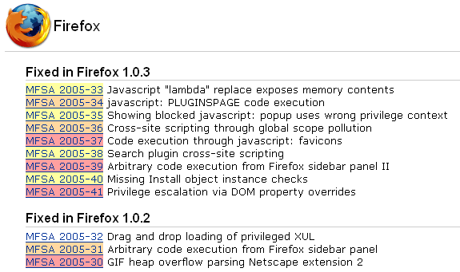
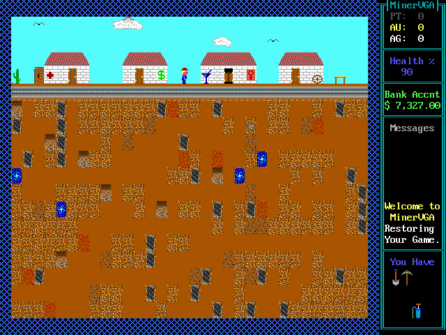
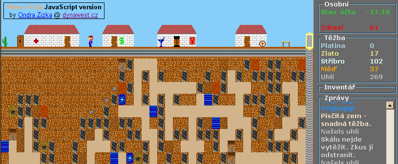

Jihoèeská univerzita
Pedagogická fakulta
Ondøej �i�ka
Bakaláøská práce
na téma
Tvorba aplikací na stranì klienta
s pou�itím technologie JavaScript
verze 1.2.4
Vedoucí bakaláøské práce:
Ing. Jan Jára, Ph.D.
Zadání
Tvorba aplikací na stranì klienta s pou�itím technologie JavaScript
Technologie JavaScript bıvá mnohdy podceòována z hlediska vyjadøovací síly jazyka, pou�itelnosti pøi tvorbì aplikace a také svojí zdánlivou nemo�ností pracovat s daty. Pokuste se dokázat, �e lze i jejím vıhradním pou�itím vytvoøit smysluplné aplikace nevy�adující podporu skriptování na stranì serveru.
- popište mo�nosti této technologie
- definujte oblast pou�ití této technologie pro tvorbu aplikací
- popište mo�nosti dekompozice problematiky s ohledem na dìlbu práce pro více programátorù
- vytvoøte aplikaci, na které pøedvedete:
- opodstatnìnost tvorby aplikací touto technologií
- dekompozici problematiky
Nìkterá doporuèená literatura:
- David Flanagan: JavaScript - kompletní prùvodce, 2. aktualizované vydání, Computer Press 2002, O'Reilly, ISBN 80-7226-626-8.
- Scott Isaacs: Dynamické HTML, Computer Press 1997, Microsoft Press 1997, ISBN 80-7226-083-9.
- Lee Purcell, Mary Jane Mara: JavaScript - tvorba dokonalıch WWW stránek - podrobnı prùvodce zaèínajícího u�ivatele (The ABCs of JavaScript), Grada Publishing 1998, SYBEX Inc. 1997, ISBN 80-7169-531-9.
Prohlášení
Prohlašuji, �e jsem tuto bakaláøskou práci vypracoval samostatnì a �e jsem veškerou pou�itou literaturu uvedl v seznamu pou�ité literatury.
Podìkování
Dìkuji vedoucímu bakaláøské práce, doktoru Ing. Janu Járovi, za ochotnou spolupráci pøi její tvorbì.
Dìkuji Harrelovi W. Stillesovi za podporu pøi rané fázi vıvoje hry Miner JS a pøedevším za svolení k u�ití jeho nápadù a grafiky z pùvodní verze.
Podìkování patøí také mım rodièùm, kteøí se ujali role korektorù, a všem dalším lidem, kteøí mi pomáhali pøi opravách textu a testování hry.
A nakonec dìkuji i všem vıvojáøùm, na jejich� mnohaleté práci nyní já mohu stavìt.
Anotace
Práce pøedstavuje technologii JavaScript jako plnohodnotnı programovací jazyk a dokazuje, �e je mo�né ho pou�ít nejen pro skriptování v dokumentech HTML, co� je jeho nejznámìjší vyu�ití, ale i pøi programování klientskıch i serverovıch aplikací a také jako skriptovacího jazyka vyšší úrovnì pro ovládání komplexních desktopovıch aplikací. Tyto mo�nosti jsou pøedvedeny na reálnıch pøíkladech. Dále se zabıvá mo�nostmi JavaScriptu pøi dekompozici podle principù objektovì orientovaného programování, a pojednává o nepøíliš známıch mo�nostech vyu�ití JavaScriptu v prohlí�eèích. Nakonec je popsána realizace praktické èásti.
Praktickou èást tvoøí aplikace Miner JS, logicko-ekonomická strategická hra, vytvoøená vıhradnì s pou�itím technologií nabízenıch moderními prohlí�eèi pro HTML dokumenty.
Abstract
This bachelors thesis introduces the JavaScript technology as a fully usable programming language and proves its capability to be used not only for scripting in HTML documents, what is the commonly known domain of its use, but also for programming both client-side and server-side applications as well as a high-level scripting language for controlling complex desktop applications. These capabilities are demonstrated on real-world examples. Furthermore it deals with the possibilities of using JavaScript for decomposition by the means of object-oriented programming, and exposes not well-known ways to utilize JavaScript in web browsers. Finally, a realization of the practical part is described.
Practical part consist of a Miner JS application, a logical-economic strategy game, entirely created using only technologies provided by modern web browsers for HTML documents.
Obsah
- Teoretická èást
- Úvod do jazyka JavaScript
- Seznámení s JavaScriptem
- Co JavaScript je
- Co JavaScript není
- Historickı vıvoj JavaScriptu
- Mo�nosti uplatnìní JavaScriptu
- Pou�ití JavaScriptu jako vyššího jazyka pro ovládání èásti aplikace - prohlí�eèe
- U�ivatelské skripty
- Microsoft Office
- Allaire HomeSite
- Macromedia Flash
- Adobe Photoshop
- Jasc Paint Shop Pro
- Microsoft Windows Scripting Host
- Tvorba aplikací na základì frameworku pou�ívajícího JavaScript
- Mo�nosti JavaScriptu pøi dekompozici - vyu�ití plnì objektového konceptu Javy
- Mo�nosti dekompozice s ohledem na kooperativní programování
- Seznámení s JavaScriptem
- Struènı popis jádra jazyka JavaScript
- JavaScript ve webovıch prohlí�eèích
- Úvod do jazyka JavaScript
- Praktická èást
- Závìr
- Zdroje
- Seznam pøíloh
Pøedmluva
Cíle práce
Kdy� se øekne JavaScript, mnozí lidé si vybaví úryvky kódu, kterımi dosahují na WWW stánkách efektù typu "digitální hodiny", zmìny obrázkù pøi pøejezdu myší a podobnì. Èasto si pak udìlají o JavaScriptu úsudek, �e je to primitivní jazyk, jeho� mo�nosti jsou takovım pou�itím vyèerpány (JavaScript: The World's Most Misunderstood Programming Language).
JavaScript (dále obèas JS) je však sofistikovanı promyšlenı jazyk s pomìrnì unikátními vlastnostmi, které jej èiní velmi vhodnım pro pou�ití jako skriptovací nástroj v nejrùznìjších prostøedích. Díky zdaøilému návrhu je s ním mo�né jak napsat krátkı a plochı, avšak ve vısledku velmi efektivní kód, tak vytvoøit rozsáhlou slo�itou aplikaci zalo�enou na objektovém modelu. První pøípad je èastìjší - jsou to právì ty úryvky kódu zmínìné v pøedchozím odstavci. Druhı pøípad mù�ete mít pøímo pøed oèima a nebudete o tom vìdìt: Víte, �e prohlí�eè Firefox je vlastnì jen sada komponent spojenıch JavaScriptem?
Tato bakaláøská práce si klade za cíl pøedstavit JavaScript jako dynamickı objektovì orientovanı obecnì pou�itelnı multiplatformní sympatickı programovací jazyk. Nesna�í se o vıuku JavaScriptu ani není referenèní pøíruèkou. Podle toho jsem také vybíral témata a oblasti, kterımi se práce zabıvá. Nìkteré pasá�e se tıkají vìcí souvisejících s JS jen nepøímo, ale bylo je vhodné zaøadit. Naopak nìkteré aspekty JS ani nejsou zmínìny.
Nároky na ètenáøe
Pøedpoklady pro porozumìní na stranì ètenáøe jsou:
- Znalost principù programování v procedurálních jazycích (napø. C, Pascal, Java, Python, PHP, Perl, TcL...)
- Znalost filosofie objektovì orientovaného programování (OOP)
- Znalost principu fungování aplikací øízenıch událostmi (event-driven applications)
- Znalost syntaxe jazyka JavaScript (ECMAScript Language Specification - 3rd edition), nebo aspoò èásteèná znalost syntaxe jazyka Java, C++, PHP nebo podobného
- Znalost vıznamù elementù jazyka (X)HTML (XHTML™ 1.0 The Extensible HyperText Markup Language (Second Edition))
- Znalost principu fungování WWW stránek a protokolu HTTP a z nich vyplıvajících omezení
- Znalost Document Object Model (DOM) implementovaného jako souèást klientského JavaScriptu
- Silnì doporuèuji nainstalovat prohlí�eè Firefox a nadšenci mohou instalovat i Venkman extension (JavaScript debugger), pøípadnì další rozšíøení Firefoxu urèená pro vıvojáøe
- Hravou povahu a trpìlivost pro vyzkoušení praktické èásti - hry Miner JS
XHTML jako formát textové èásti práce
Jako formát této práce jsme zvolili XHTML. Pro tuto volbu existuje nìkolik pádnıch dùvodù:
- XHTML je otevøenı formát s veøejnou specifikací. Je tedy jednoduše pøenositelnı mezi programy i platformami.
- XHTML je také vhodnı jako vstupní formát pro pøevod do dalších formátù jako napø. PDF. Obsahuje všechny podstatné metainformace o obsahu.
- Vizuální prezentace obsahu je velmi jednoduše upravitelná pomocí CSS. Pou�ívání principu stylù ve WYSIWYG editorech jako napø. MS Word je neohrabané, zmatené a ve vısledku spíše kontraproduktivní.
- V XHTML lze jednodušeji pou�ívat køí�ové odkazy.
- XHTML spolu s CSS nabízí daleko vìtší mo�nosti formátování obsahu.
- XHTML je formát pro web - práci je tedy mo�no vystavit na internetu.
- V XHTML dokumentu mù�eme pøímo pøedvést pøedmìt práce - JavaScript.
- A v neposlední øadì se nepochybnì jedná o originální a novátorskou formu diplomové práce :-)
Pou�ití XHTML má ovšem i nevıhody, kterıch si všimnou pøedevším ti, kteøí ètou tištìnou verzi tohoto dokumentu. Kombinace XHTML + CSS je momentálnì primárnì urèena pro zobrazování dokumentu na internetu. Cituji úvod èlánku Kena Holmana ze serveru www.xml.com:
We often take the printed form of information for granted, yet how many of us are satisfied with the print-screen functionality from a web browser? How many times have you printed a lengthy web document and found the paginated result to be as easily navigated as the electronic original?
Pou�ití XHTML pro formátování tištìného dokumentu je zatím neobvyklé, a pokud u� se realizuje, pøed tiskem se dokument pøevede pomocí technologie XSLT na nìjakı vhodnìjší formát, napø. PDF, nebo v poslední dobì XSL-FO, se kterım u� pracují nìkteré programy pro sazbu textù (a o nìm je vıše citovanı èlánek).
Jak naznaèuje citace, schopnosti prohlí�eèù formátovat webové stránky pro tisk jsou pomìrnì omezené. Oproti textovım editorùm (zatím) nedisponují zejména nejrùznìjšími typografickımi technikami jako je spojování pøedlo�ek s následujícím slovem, rozdìlování slov, hlídání tzv. sirotkù a vdov apod. Dále si nedovedou dost dobøe poradit pøi dìlení obsahu mezi stránky, a tak èasto rozdìlí i malı obrázek mezi dvì stránky. Svazování pøedlo�ek s následujícím slovem je v této práci vyøešeno pomocí JavaScriptu. Problémy související se stránkováním však s jeho pomocí vyøešit nejde.
Dalším problémem je neúplná podpora nebo nekorektní implementace CSS.
Prohlí�eèe napøíklad nedoká�ou rozlišit liché a sudé stránky a odlišnì upravit jejich okraje,
aèkoliv na tuto funkci je v CSS pamatováno pravidlem @page.
Špatnì funguje automatické èíslování elementù, tak�e kapitoly je nutno èíslovat ruènì.
Také vıše zmínìné hlídání sirotkù a vdov je v CSS øešeno - vlastnostmi orphans a widows.
Vytvoøení záhlaví a zápatí se provádí pomocí vlastnosti position: fixed, tu však
neimplementuje Internet Explorer.
A nakonec vadí i samotná specifikace CSS, která ve verzi 2.1 vùbec neøeší napø. èíslování stránek, poznámky pod èarou a podobnì.
Terminologie
Terminologie a odborné termíny nejsou v práci pou�ívány striktnì. Napøíklad v JavaScriptu se sice funkce nazıvá funkce, a zároveò veškeré funkce jsou metodami nìjakého objektu. V práci se vyskytují oba termíny - "funkce" zdùrazòuje roli funkce jako objektu JavaScriptu typu Function, kde�to "metoda" zdùrazòuje, �e jde o funkci manipulující s objektem.
Rozlišení typù zdrojovıch kódù
V práci se vyskytují ukázky nìkolika programovacích a popisnıch jazykù a jinıch formátù. Odlišují se rùznou barvou pozadí. Pøi tisku práce proto doporuèujeme zapnout v prohlí�eèi tisk obrázkù a barev na pozadí. Kód JavaScriptu má šedé pozadí, tmavì šedı rámeèek a vpravo nahoøe je tato ikonka:
A. Teoretická èást
A.1. Úvod do jazyka JavaScript
A.1.1. Seznámení s JavaScriptem
Co JavaScript je
JavaScript je procedurální programovací jazyk. Jeho syntaktická podoba bude blízká programátorùm v C a odvozenıch jazycích: syntaxe JavaScriptu byla odvozena od syntaxe Javy byla odvozena od syntaxe C++ byla odvozena od syntaxe C. Zde je krátká ukázka kódu:
function Pozdrav(){
alert("Ahoj lidi!");
}
Pozdrav();alert(),
a následnì ji zavolá (provede). Vidíte tedy, �e podoba s C èi Javou je velká.
JavaScript je objektovì orientovanı jazyk.
V pøedchozím pøíkladu jsme definovali funkci. Tak se to dá øíci zjednodušenì. V rozporu s klíèovım slovem function,
které je dáno historickımi dùvody, ve skuteènosti v JavaScriptu funkce z pohledu OOP neexistují, existují pouze metody,
a vše kromì skalárních promìnnıch je objekt.
Na metodu je ovšem tøeba tøída, které by patøila. Kam tedy patøí funkce Pozdrav() ?
Definicí funkce bez pøiøazení nìjakému objektu ji automaticky pøiøazujete aktuálnímu objektu nejvyšší úrovnì.
V tomto vıroku se však skrıvají hned tøi chytáky:
Nejprve pøiøazení metody objektu. V jazycích s pevnou strukturou tøíd jako jsou C++ nebo Java se metody definují pro tøídu, a ka�dá instance má právì tuto nemìnnou sadu metod. Ne tak v JS. Ten pou�ívá pro realizaci OOP tzv. prototypy, co� jsou jakési vzorové objekty, z nich� vznikají instance zvláštním odvozením od nich. Více dále v dokumentu.
Dalším chytákem je objekt nejvyšší úrovnì. Je to speciální objekt, kterı má nìkolik úloh.
Mimo jiné implementuje funkce jako eval(), isNan() nebo parseInt().
Jsou v nìm pøímo èi nepøímo obsa�eny veškeré další objekty daného kontextu, pøièem� kontext je další téma na vysvìtlení.
Poslední chyták je aktuální objekt nejvyšší úrovnì. Copak jich mù�e bıt více? Ano, mù�e existovat
libovolnı poèet objektù nejvyšší úrovnì, a to nezávisle na sobì, ale zároveò o sobì mohou vìdìt. Nejlepším pøíkladem
jsou objekty nejvyšší úrovnì v prohlí�eèích - objekty window. Ka�dé okno èi rám má vlastní
objekt window, kterı obsahuje promìnné a metody definované kódem v naètené stránce. Pokud jsou v nìkteré stránce
vytvoøeny rámy elementem <frameset>, navzájem se na sebe odkazují pøes vlastnost
window.top, která odkazuje na objekt window okna obsahující tyto rámy. Ten má dále vlastnost
frames, co� je kolekce objektù window jednotlivıch rámu. Nyní pokud nìjakı rám definuje metodu
Pozdrav(), ta se pøiøadí objektu window tohoto rámu, a nebude tak pøímo viditelná z jiného
rámu a je tøeba ji volat nepøímo pøes window.top.frames[...].Pozdrav();
JavaScript je multiplatformní. Jeliko� je specifikován abstraktnì, zále�í pouze na tom, na jakıch všech platformách byl implementován. Teoreticky by mohl fungovat tøeba i v mobilních telefonech.
JavaScript je dynamickı. Jeliko� se jedná o interpretovanı jazyk, mù�e si dovolit nále�ité vymo�enosti jako metodu eval(), která vykoná kód vlo�enı jako øetìzec, dynamické typování, definice a zmìna tøíd za bìhu, sebereflexe a další. Napø. pøiøazením nové metody prototypu tøídy String mù�ete zmìnit chování nejen všech objektù String vytvoøenıch v budoucnu, ale i všech ji� vytvoøenıch:
// Pøiøazení nové metody pøeddefinovanému objektu
String.prototype.Reverse = function (){
var s = "";
for(i = this.length; i >= 0; i--){
s += this[i];
}
return s;
}JavaScript je obecnì pou�itelnı. Aèkoliv drtivá vìtšina lidí ho zná pouze z webovıch prohlí�eèù, skuteènost je taková, �e JavaScript sám o sobì je pou�itelnı k jakémukoliv úèelu, pro kterı staèí interpretovanı jazyk. Èasto po nìm sahají vırobci slo�itého softwaru, u kterého chtìjí u�ivatelùm nabídnout mo�nost naprogramovat rutinní postupy do skriptu zvaného makro. Pøíkladem je tøeba implementace JavaScriptu firmou Allaire v editoru HomeSite, firmou Adobe v grafickém editoru Photoshop nebo firmou Microsoft ve vıvojovém prostøedí Visual Studio, v aplikaci Windows Scripting Host, v technologii ASP a v dalších produktech.
O obecnosti JavaScriptu a nezávislosti na implementaci svìdèí fakt, �e napøíklad v produktech firmy Microsoft je obvykle mo�no pou�ít JavaScript místo jazyka VBscript, s dosa�ením (pøinejmenším) stejnıch vısledkù. To je dáno tím, �e tìmito jazyky jsou ovládány objekty COM, a to prostøednictvím metod vystavenıch v jejich rozhraní (viz COM: Component Object Model Technologies). Kromì jádra jazyka se tedy pøíkazy sémanticky shodují.
Spoleènost Mozilla.org dala volnì k pou�ití vlastní implementaci jádra JavaScriptu, kterou mù�e kdokoliv pou�ít jako skriptovací jazyk pro svoji aplikaci. Tato implementace obsahuje pouze to, co je povinné podle definice ECMAScript (Standard ECMA-262). Veškeré další vlastnosti u� závisí na u�ivateli implementace.
Co JavaScript není
Z pøedchozích odstavcù víceménì vyplıvá, co JavaScript není:
- Není to jen jazyk pro programování www stránek.
- Není to zjednodušená verze Javy.
- Není to jazyk pro jen pro amatéry, nevhodnı pro profesionální programování.
Historickı vıvoj JavaScriptu
JavaScript v prohlí�eèi Netscape Navigator
JavaScript byl vyvinut firmou Netscape (autorem návrhu Brendan Eich) pro skriptování v prohlí�eèi WWW stránek Navigator 2.0. Verze v nìm implementovaná se dnes oznaèuje jako JavaScript 1.0. Oproti návrhu obsahovala mnoho chyb - mnoho vìcí nešlo vùbec provést, mnoho se chovalo jinak, ne� bylo urèeno v návrhu.
V Navigatoru 3.0 byly v JavaScriptu 1.1 napraveny nejhorší chyby.
V JavaScriptu 1.2, implementovaném v Navigatoru 4, byly odstranìny další chyby a pøidány nové prvky,
napøíklad pøíkaz switch a regulární vırazy.
S Navigatorem 4.5 pøišel JavaScript 1.3, kterı odpovídal standardu ECMAScript 1.
JavaScript 1.4 byl implementován jen na serverovıch produktech Netscape.
JavaScript 1.5 je implementací standardu ECMAScript 3 v Navigatoru 6 a opìt obsahuje nové prvky, zejména vıjimky.
JavaScript v prohlí�eèi Microsoft Internet Explorer
Firma Microsoft se po poèáteèním zavr�ení internetu jako neperspektivního vıstøelku akademikù vzbudila
a opøela se do vıvoje Internet Exploreru.
Mìla v plánu pøevzít vìtšinovı podíl na trhu, a proto do prohlí�eèe spìšnì zahrnula mnoho technologií, zejména JavaScript, CSS, DOM.
Tyto technologie se však na veøejné pùdì teprve formovaly na základì širokého konsenzu vıvojáøù prohlí�eèù,
tvùrcù webù a dalších zainteresovanıch profesí, a proto nebyly pøipraveny k ostrému pou�ití.
To se však firmì Microsoft nehodilo, a tak vìtšinu z nich dotáhla svéráznım zpùsobem do stavu, kdy je pou�ívat šlo.
To se vıraznì dotklo i JavaScriptu a objektového modelu dokumentu
a v prohlí�eèi tak existují nesystémové konstrukce typu document.all,
velmi zvláštní zpùsob šíøení a zachytávání událostí a další odchylky od všeobecnì dohodnutého standardu.
Na druhou stranu Internet Exploreru jistì nelze upøít jeho velmi vıznamnou historickou roli. Zaprvé zpopularizoval právì ony technologie, by� s mírnımi odchylkami, a velmi posunul vıvoj webu od suchıch statickıch dokumentù smìrem k interaktivním inteligentním stránkám, které by se daly oznaèit za tenké klienty. Zadruhé získáním dominantního podílu na "trhu" prohlí�eèù dotlaèila firmu Netscape témìø ke krachu, a� ji nakonec koupila firma AOL. Zastaralı prohlí�eè Navigator s nepatrnım podílem na trhu byl pro nového majitele neatraktivní a neperspektivní, a zadarmo dal k dispozici jeho zdrojové kódy veøejnosti. Byla zformována Nadace Mozilla, která sdru�ila èást pùvodních programátorù z Netscapu a dobrovolné vıvojáøe z celého svìta s cílem pokraèovat ve vıvoji prohlí�eèe. Po analıze stávajícího kódu dospìli k rozhodnutí prakticky kompletnì vše pøeprogramovat. Postupnì ve skrytu a bez zájmu široké veøejnosti vytvoøili nìkolik vyspìlıch technologií - renderovací jádro Gecko s korektním pojetím principù CSS, aplikaèní kostru Mozilla Framework s technologií XUL, a další, které pozdìji spojili do celıch aplikací. Dnes, po letech vıvoje, díky jejich úsilí existuje moderní prohlí�eè Firefox, ctící standardy, pomìrnì stabilní, bezpeènı, chovající se prakticky stejnì na všech platformách a rychle se vyvíjející dále.
Toto by se asi bez prohlí�eèe Internet Explorer nestalo.
Nejprve pøišel MSIE 3.0 - tam se o JavaScripu moc nedá mluvit, ale JScript 1.0 byl hrubou kopií JavaScriptu 1.0. JScript 2.0 v pozdìjších verzích MSIE 3.0 odstraòoval zásadní nekompatibility tak, aby v MSIE fungovaly základní skripty urèené pro Netscape Navigator.
Opravdovım pøelomem pak byl Internet Explorer 4.0. Ten byl jedním ze stì�ejních prvkù Microsoftu
na cestì k dominanci. Prohlí�eè byl integrován do systému Windows 98, z èeho� pozdìji vyplynuly
nesmyslné nìkolikaleté soudní spory, jejich� vısledkem byl pøíkaz, �e prohlí�eè musí bıt mo�né ze systému odinstalovat.
JScript 3.0 v této verzi byl urèen zejména k rozpohybování Dynamického HTML (DHTML).
Byly pøidány zcela nové vlastnosti, prvky a postupy, napøíklad pseudo-kolekce all,
dále mo�nost prakticky libovolné práce se stromem dokumentu, ovládání CSS vlastností, a také podpora ActiveX objektù,
které více ne� èemukoliv jinému poslou�ily šíøení virù.
Dále byl ze strany Microsoftu JScript upravován tak, aby aspoò èásteènì odpovídal standardùm. JScript 5.0 v prohlí�eèi IE 5.0 èásteènì odpovídá standardu ECMAScript 3. JScript 5.5 v prohlí�eèi IE 5.5 pak odpovídá standardu ECMAScript 3 úplnì.
Standard ECMAScript
Vıvoj JavaScriptu byl od poèátku velmi bouølivı. Od návrhu do uvolnìní veøejnosti neuplynula dlouhá doba a JavaScript tak pøišel o uzavøenı cyklus analızy a testování, bì�nı pro programovací jazyky. Navíc jeho implementaci, vylepšování a zmìny provádìlo nìkolik vırobcù najednou. Je a� pøekvapivé, jak ideovì èistı jazyk takto vznikl.
Standardizace JavaScriptu se ujala organizace ECMA (European Computer Manufacturers Association). Vydala nìkolik verzí standardu nazvaného ECMAscript s kódovım oznaèením ECMA-262 nebo také ISO/IEC 16262. Poslední, tøetí vydání je z prosince 1999. Další se plánuje na konec roku 2005. Vıvoj tohoto standardu zprvu vedly spoleènosti Netscape a Microsoft. Vıslednı standard je podmno�inou dovedností interpreterù jazyka JavaScript od obou spoleèností, avšak ménì ne� jejich prùnikem. Je však tøeba podotknout, �e standard se tıká pouze jádra JavaScriptu, nikoliv klientského API prohlí�eèù.
Tento standard bıvá obèas kritizován. Je mu vytıkána nesrozumitelnost a návrhové chyby.
ECMA vydává i jiné standardy tıkající se JavaScriptu - napøíklad ECMA-357 - ECMAScript for XML (E4X).
Další zajímavé informace o historii JavaScriptu najdete v èlánku JavaScript: How Did We Get Here.
A.1.2. Mo�nosti uplatnìní JavaScriptu
Pro svoji univerzálnost mù�e bıt JavaScript zvolen prakticky kdekoliv, kde je tøeba nìjakı principiálnì jednoduchı, avšak mocnı skriptovací jazyk. Napø. tam, kde je tøeba zjednodušit programování a slo�itost vrstvy, na které pracuje, zredukovat do sady objektù a jejich vlastností a metod. Nebo tam, kde je tøeba umo�nit u�ivateli vytvoøit automatizované akce - makra. Ta se mohou vygenerovat na základì u�ivatelem provádìnıch operací a ulo�it jednoduše jako textovı soubor, kterı se mù�e podle potøeby pozmìnit.
Pou�ití JavaScriptu jako vyššího jazyka pro ovládání èásti aplikace - prohlí�eèe
Nejbì�nìjší aktivní i pasivní pou�ití JavaScriptu je jednoznaènì ve webovıch prohlí�eèích. JavaScript rozšiøoval svou pùsobnost postupnì na vìtší a vìtší èást prohlí�eèe, a� nastala situace, kdy prakticky celé renderovací jádro je prorostlé JavaScriptem skrz naskrz a skoro neexistuje nic, co by se jím nedalo ovládat. Navíc èásteènì mù�e ovládat i nìkteré funkce prohlí�eèe. Zkrátka je vidìt, �e zde je hlavní doména JavaScriptu. Rozsah pùsobnosti JavaScriptu v prohlí�eèích je popsán v kapitole JavaScript ve webovıch prohlí�eèích.
Nedlouho pøed dokonèením této práce bylo na E-mailovém serveru Centrum.cz spuštìno nové u�ivatelské rozhraní. Jeho technické øešení je revoluèní a vyslovuji jeho tvùrcùm svùj obdiv. Vytvoøili toti� neuvìøitelnì kvalitní simulaci grafického prostøedí bì�né desktopové aplikace s vìtšinou jejích vıhod jako pøetahování mezi slo�kami, nìkolik oken s rùznımi zprávami a další prvky chování komfortních e-mailovıch klientù. Aplikaci ještì korunovali vytvoøením vlastních formuláøovıch prvkù, které tak ji� nejsou omezeny mo�nostmi vestavìnıch prvkù a mohou jakkoliv vypadat i fungovat. A celé to bì�í jak v Internet Exploreru, tak v prohlí�eèích dodr�ujících standardy.
Ovšem kde jsou mo�nosti JavaScriptu zdánlivì vyèerpány a kde jeho pùsobnost bì�nì konèí, tam v jedné vıjimeèné aplikaci teprve zaèíná. V aplikacích Nadace Mozilla je klientské skriptování v HTML dokumentech jen špièkou ledovce. Jsou toti� celé naprogramované v JavaScriptu.
Zpùsob, jakım tyto aplikace tì�í z JavaScriptu maximum, si ji� vyslou�il nìkolik knih, desítky manuálù, stovky èlánkù a tisíce diskuzí. I já tomuto fenoménu vìnuji zvláštní oddíl.
U�ivatelské skripty - Office, HomeSite, Macromedia, Adobe Photoshop, Paint Shop Pro, Windows Scripting Host
Jednou z nejefektivnìjších mo�ností, jak dát programu obrovskou pøidanou hodnotu a zapojit zdatnìjší u�ivatele do vylepšování softwaru, je umo�nit jim modifikovat chování programu a pøidat mu nové schopnosti. Bì�nou metodou k dosa�ení takového cíle je proskriptování programu. Jednotlivım komponentám programu se urèí styèné body, které budou vystaveny skriptovacímu prostøedí, a naprogramuje se jim pøíslušné rozhraní. V prostøedí skriptovacího jazyka se pak tyto body jeví jako jednotlivé prostøedky, jejich� prostøednictvím se komponenty ovládají a spojují do souèinnosti ve smysluplné celistvé akci.
Takovıto obecnı popis mnoho neøíká. Pøeveïme si ji tedy do pøípadu, kdy chceme proskriptovat jednoduchı grafickı editor pomocí JavaScriptu. Analızou zjistíme, �e je vhodné vytvoøit napøíklad objekt pro aplikaci a objekty pro jednotlivé otevøené obrázky. V objektu aplikace bude vlastnost reflektující aktuální nástroj. Také bude mo�ná vhodné vytvoøit kolekci s prvky, které budou pøedstavovat jednotlivé nástroje k vıbìru. Urèitì bychom mìli objektu obrázku vytvoøit metodu, která by na nìj aplikovala filtry. Tímto zpùsobem postupnì navrhneme vhodnı objektovı model, kterı bude mo�no pou�ít k ovládání aplikace.
Nyní musíme k jednotlivım objektùm, vlastnostem a metodám naprogramovat adekvátní reakci v samotné aplikaci.
Architektura aplikace vùbec nemusí reflektovat architekturu našeho návrhu. Staèí, kdy� se to tak bude jevit
z pohledu skriptu. Pøedpokládejme, �e ve skriptu je napøíklad pøíkaz
application.activeImage.applyFilter(new GrayFilter(0.5)).
Pøesuòme se nyní z JavaScriptu do kódu naší aplikace a popišme si, co se na základì onoho JavaScriptového pøíkazu dìje:
Pro komunikaci naší aplikace s interpreterem JavaScriptu existuje rozhraní, které musí aplikace implementovat.
Toto rozhraní obsahuje funkce, které aplikaci øíkají, co má podle skriptu provádìt.
Nejprve interpreter JavaScriptu øekne naší aplikaci, �e má vytvoøit objekt tøídy GrayFilter,
a konstruktoru byl pøedán urèitı parametr. Pro toto sdìlení existuje v rozhraní funkce, øeknìme
createObjectFromClass(sNázevTøídy, aParametryKonstrukoru, pVracenıObjekt).
Ta je volána a jako parametr je jí pøedán øetìzec "GrayFilter", pole s objekty s informacemi o parametrech
a ukazatel na ukazatel, kam máme vrátit novì vytvoøenı objekt.
Na základì pøedanıch informací danı objekt vytvoøíme a vrátíme.
Interpreter JavaScriptu si ho pøevezme a ulo�í zatím kamsi do svıch útrob.
Dále interpreter najde ji� existující datovou strukturu, která reprezentuje globální objekt application,
a "pøeète" z ní vlastnost activeImage. Ètení je provedeno jako volání funkce rozhraní, øeknìme
getProperty(sNázevVlastnosti, pVracenıObjekt). Ta vrátí opìt datovou strukturu, tentokrát reprezentující
objekt activeImage. Nad touto strukturou je volána funkce tøeba
callMethod(sJménoMetody, aParametry, pVracenıObjekt), kterou musíme naprogramovat tak,
aby provedla po�adovanou akci. Funkci callMethod() je v poli aParametry pøedán jako jeden z jeho prvkù
také objekt GrayFilter, kterı jsme vytvoøili pøi volání createObjectFromClass.
Tímto zpùsobem probíhá celé vykonávání kódu JavaScriptu. Jednotlivé interpretery JavaScriptu se mohou lišit, a to nejen názvem funkcí rozhraní a a jejich parametrù, ale i zásadnìji: Interpreter v naší ukázce je pøedstavitel tzv. pasivní implementace. Pasivnì ovšem implementujeme my: Èekáme, co nám interpreter pošle za string (napøíklad pøi volání metody), a na základì toho teprve reagujeme. Naproti tomu aktivní implementace je taková, kdy pøi inicializaci bìhového prostøedí musíme pøedat interpreteru veškeré objekty, které mají bıt v bìhovém prostøedí vystaveny, a v prùbìhu vykonávání skriptu prùbì�nì tyto objekty aktualizovat, aby odpovídaly souèasnému stavu. Interpreter takto ménì volá funkce komunikaèního rozhraní a více ète právì z tìchto objektù.
Office
Kanceláøskı balík Microsoft Office dává k dispozici mohutnou aparaturu k ovládání aplikací. Jako primární jazyk byl v historii zvolen Visual Basic Script, je však mo�né pou�ít i JavaScript. Následující ukázka provede zámìnu øetìzce "&" za øetìzec "&":
function HtmlAmpersand(){
Selection.Find.ClearFormatting
Selection.Find.Replacement.ClearFormatting
with(Selection.Find){
Text = "&";
Replacement.Text = "&";
Forward = true;
Wrap = wdFindContinue;
Format = false;
MatchCase = false;
MatchWholeWord = false;
MatchWildcards = false;
MatchSoundsLike = false;
MatchAllWordForms = false;
}
Selection.Find.Execute(wdReplaceAll);
}
HomeSite
Jedním z posledních poèinù firmy Macromedia ve vıvoji excelentního programu HomeSite, ne� ho z nepochopitelnıch dùvodù pøestala vyvíjet, bylo, �e v nìm umo�nila skriptování. Jako jazyk byl pou�it JavaScript a produktu to dodalo tolik síly a flexibility, �e i bez podpory a dalšího vıvoje ji� dva roky pøe�ívá a tìší se znaèné oblibì u vıvojáøù webovıch aplikací.
Následující kratièká ukázka obalí vybranı text HTML elementem <code>:
function Main(){
Application.ActiveDocument.InsertTag('<code>', '</code>', false);
}Macromedia Flash
Jak je popsáno v podkapitole Provázanost JavaScriptu s Flashem, firma Macromedia pou�ívá ve vıvojovém prostøedí pro skriptování JavaScript. Touto aplikací jsem se ale nezabıval tak hluboko, abych se s jejími skriptovacími mo�nostmi blí�e seznámil. Zájemce odkazuji na uvedené stránky.
Adobe Photoshop
Firma Adobe evidentnì pøešlapovala na místì a nemohla se rozhodnout, jestli tzv. dávky (batches)
zpøístupní jako skripty s textovım zdrojovım kódem, nebo je nadále nechá zahalené.
Celkovı image produktù Adobe byl toti� styl myšoklikací aplikace, u které se na klávesnici šahat nesluší.
Proto ve verzi Photoshop 7.0 sice probíhají akce a dávky na bázi JavaScriptu, ovšem v prostøedí programu
o tom není ani zmínky. Pro objevení JavaScriptu musíme jít hluboko do adresáøù programu,
kde v souboru ScriptingListenerJS.log najdeme tøeba takovıto záznam:
on open fileList
tell application "Adobe Photoshop CS"
activate
set i to count of fileList
repeat i times
set thefile to (item i of fileList)
open thefile showing dialogs never
tell current document
do javascript "{var id110 = charIDToTypeID( \"Lvls\" );
var desc33 = new ActionDescriptor();
var id111 = stringIDToTypeID( \"autoBlackWhite\" );
desc33.putBoolean( id111, true );
var id112 = stringIDToTypeID( \"autoNeutrals\" );
desc33.putBoolean( id112, true);
executeAction( id110, desc33, DialogModes.NO );}"
if (characters -1 thru -3 of thefile = "JPG") then
save as JPEG with options {embed color profile:false,
matte:none, quality:12} without copying
close without saving
else
save
close without saving
end if
end tell
end repeat
end tell
end openOvšem u Photoshopu CS je ji� situace jiná. Firma Adobe razantnì vyšla vstøíc u�ivatelùm s programátorskım nadáním a u všech svıch aplikací nasazuje JavaScript jako jazyk pro skriptování a pro psaní rozšíøení (extensions):
Now Adobe has taken a longer view of scripting. It recognizes the importance of a scripting tool as a means of allowing savvy users and 3rd party tool makers to extend the capabilities of Photoshop in very novel ways. For example, automated creation of catalogs is one such application. But Adobe needs a cross platform scripting language since VBA does not run on the Mac or a possible new target platform, Linux. So Adobe has added JavaScript as its scripting language because it does reach Linux, Mac, Windows and a number of other platforms. Users are encouraged to try theFile | Script | Browsecommand and the go to theProgram File/Adobe/Photoshop CS/Scripting Guide/Sample Scripts/JavaScriptsdirectory and try some of the two dozen simple to complex scripts available there. This is the future of the whole line of Adobe products as JavaScript has become the macro and extension language for Illustrator, GoLive, Atmosphere, etc.(ze serveru thephotofinishes.com)
Jasc Paint Shop Pro
Jeden z nejlepších konkurentù Photoshopu, editor Paint Shop Pro od firmy Jasc, co se tıká skriptování, Photoshop pøedbìhl. Ve svojí verzi 9.0 obsahuje povedenı skriptovací systém. Firma Jasc však nesáhla po JavaScriptu; místo toho vsadila na vlastní proprietární skriptovací jazyk:
from JascApp import *
# Actually works only on a image in landscape mode 10x15 cm
def ScriptProperties():
return {
'Author': 'Jean-Luc Ernst',
'Copyright': 'Jean-Luc Ernst',
'Description': "Create a sepia frame from landscape mode",
'Host': 'Paint Shop Pro',
'Host Version': '8.00'
}
def Do(Environment):
App.Do( Environment, 'Copy', {
'GeneralSettings': {
'ExecutionMode': App.Constants.ExecutionMode.Default,
'AutoActionMode': App.Constants.AutoActionMode.Match
}
})
App.Do( Environment, 'PasteGraphicAsNewImage', {
'CreateFromDropData': App.Constants.Boolean.false,
'GeneralSettings': {
'ExecutionMode': App.Constants.ExecutionMode.Default,
'AutoActionMode': App.Constants.AutoActionMode.Match
}
})
...
Dá se oèekávat, �e i firma Jasc nakonec pøejde na JavaScript. Tento kód není od JavaScriptu pøíliš daleko, je však omezen po procerurální stránce. Jedná se o jednoduchou sekvenci instrukcí. Spojeno s faktem, �e syntaxi JavaScriptu budou brzo znát u�ivatelé konkurenèních produktù Adobe, které chce firma Jasc dlouhodobì pøetáhnout k sobì, jednalo by se o logickı krok.
Windows Scripting Host
Na závìr se seznámíme s druhım nejvìtším, zároveò však paradoxnì nejménì vyu�itım nasazením JavaScriptu: Skriptovací prostøedek systémù Windows - Windows Scripting Host.
Z jistıch dùvodù se Microsoft choval k celkem dobrému skriptovacímu nástroji jako k nechtìnému potomkovi. Poprvé se objevil na CD u systému Windows 98 SE. Figuroval jako jedna z polo�ek instalace se struènou popiskou "Write scripts to help automate tasks in Windows". Instalace èi neinstalace nemìla na systém �ádnı viditelnı dopad. Spolu s Windows Scripting Host interpreterem se na disk dostal adresáø s asi šesti ukázkovımi skripty velmi špatné kvality a nicneøíkajícími komentáøi. Dokumentace nikde �ádná. Vzhledem k tomu, �e tradièní øešení firmy Microsoft je ovládat skriptem objekty COM, bylo jasné, �e i WSH je skuteènì jenom interpreter a velmi tenká skoøápka, zastøešující však veškeré COM komponenty dostupné v systému. Objekty COM u� leckdy dokumentované jsou, a jádro JavaScriptu Microsoft pou�ívá všude stejné - v prohlí�eèi i na serverovıch aplikacích - bylo tedy jasné, �e i zde se jedná o ji� dobøe prozkoumanı JScript (èím� se míní zdokumentovanı + jsou známé chyby v implementaci).
Pøes všechny pøeká�ky, a zdálo by se skoro, �e proti vùli Microsoftu, si mo�nosti skriptovat všimli všeteèní kutilové. Jeden z nich, Günter Born, dokonce šel tak daleko, �e po dvouletém zkoumání napsal knihu. Tato kniha se zabıvala WSH verze 1. Hned v pøedmluvì se dozvíme mo�nı dùvod, proè se Microsoft o WSH nikde pøíliš nešíøil: Nástroj byl plnı chyb, byl nekoncepènì navr�en a byly s ním nepochopitelné problémy. Na CD Windows 98 SE ho nejspíše zaøadili jeho vıvojáøi s tím, �e pou�ití je na vlastní riziko, a navíc získají cennı ohlas od u�ivatelù.
Jak je však u Microsoftu zvykem, nejen�e se opìt jednalo o lajdácké polovièaté øešení, ale ani se nikdo jako obvykle nezabıval bezpeèností - na co také, �e. Toho po nìjaké dobì jeden z kutilù, kteøí WSH dokázali ocenit, rád vyu�il k napsání snad nejslavnìjšího viru v historii Windows, I LOVE YOU. Tento virus byl napsán právì pro WSH v jazyce Visual Basic Script, a jediné, co staèilo k jeho nevídanému úspìchu, bylo pár øádek kódu, které pøeètou adresy z adresáøe a rozešlou mailem kopii viru na další adresy. Pøíjemce vidí I LOVE YOU od známé osoby, nedbá varovného dialogu (jak dùmyslné zabezpeèení!) a spustí si destruktivní skript. S køí�kem po funuse pøišel Microsoft s nápadem, �e skripty by mohlo bıt dobré také nìjak zabezpeèit.
V systému Windows 2000 ji� byla verze Windows Scripting Host 2.0. Objevila se i ucelená dokumentace zahrnující jak popis jádra JavaScriptu - JScript, tak nìkolik objektù COM pro základní práci se systémem. Günter Born vydal druhou knihu, Windows Scripting Host 2.0. WSH se stal plnohodnotnım systémovım skriptovacím nástrojem. Microsoft však, vìdom si toho, �e drtivá vìtšina u�ivatelù nikdy nebude nic takového potøebovat, nadále WSH nijak nepropaguje a prostì ho nechává napospas kutilùm.
Windows Scripting Host, kromì toho, �e je na instalaèních CD systému, je ke sta�ení na serveru vırobce.
Tvorba celıch aplikací na základì frameworku pou�ívajícího JavaScript - Mozilla Framework
Bì�nì prohlí�eèe umo�òují prostøednictvím skriptù ovládat stránku. U Nadace Mozilla skripty ovládají aplikaci.
S fascinující precizností, návrhovou èistotou a neuvìøitelnì efektivnì se v projektech jako Firefox, Thunderbird, Camino, Callendar a dalších prolínají technologie JavaScript, CSS, HTML, XUL a další.
Radikální krok uèinili vıvojáøi sdru�ení Mozilla, kdy� se rozhodli pøestat psát aplikaci urèenou pro více platforem pro ka�dou platformu z velké èásti znovu. K tomuto radikálnímu kroku se naskytly vhodné podmínky:
- Nadace Mozilla vznikala na pozùstatcích po vıvojovém tımu firmy Netscape.
- Na základì analızy stávajícího kódu se rozhodli celı projekt pøepsat.
- Existovala pomìrnì kvalitní specifikace JavaScriptu a kvalitní interpreter.
- Vıkon poèítaèù dosáhl úrovnì, kdy je mo�né celou aplikaci napsat v jazyce vyšší úrovnì.
 Po èase byla vyvinuta technologie XUL - XML User Interface Language.
Její úèel je poskytnout co nejsnazší prostøedek k programování klientskıch aplikací.
Je zalo�ena na myšlence, �e rozhraní aplikace je mo�no rozdìlit na tøi základní èásti:
Po èase byla vyvinuta technologie XUL - XML User Interface Language.
Její úèel je poskytnout co nejsnazší prostøedek k programování klientskıch aplikací.
Je zalo�ena na myšlence, �e rozhraní aplikace je mo�no rozdìlit na tøi základní èásti:
- Logickou strukturu, tedy hierarchii prvkù u�ivatelského rozhraní.
- Look & feel, tedy jak vypadají jednotlivé prvky, typy prvkù, rodiny prvkù, oblasti a celá aplikace.
- Bussines logic, tedy samotné chování aplikace a interakce prvkù.
Je zøejmé, �e pro ka�dou èást bude vhodnìjší jinı prostøedek, jak ji definovat:
- Logickou strukturu je vhodné popsat opìt logickou strukturou - staèí zvolit jazyk.
- Look & feel je dobré popsat zpùsobem, kterı by jednak oddìlil strukturu dokumentu od vzhledu, a jednak byl dostateènì flexibilní, aby dokázal popsat jak jednotlivé konkrétní prvky, tak rùzné skupiny prvkù, typy prvkù èi prvky v urèité vìtvi dokumentu, a prvky splòující kombinace tìchto kritérií.
- Bussines logic je samozøejmì vhodné popsat nìjakım procedurálním jazykem.
- Logickou strukturu popisuje XML dokument novì zavedené struktury.
- Look & feel - zde je volba naprosto jasná - CSS.
- Bussines logic - zde padla volba logicky na JavaScript.
Všechny tyto èásti byly spojeny do XUL. Na této technologii pak vıvojáøi postavili všechny aplikace Mozilla. Celé okno, ka�dı dialog, ka�dé menu, tlaèítko, všechno, co se v aplikaci vyskytuje, je popsáno jazykem XUL. Podoba ka�dého z tìchto prvkù je urèena kaskádními styly (CSS). Chování programu ovládá a všechny události obsluhuje JavaScript.
Jednotlivé èásti se pak dále rozkládají na mnoho podèástí. Pøi návrhu struktury bylo pamatováno na maximum potøeb, které se mohou pøi vıvoji aplikace naskytnout:
- Lokalizace (pøeklad)
- Internacionalizace (pøipravenost k zacházení s národním prostøedím)
- Dostupnost (napø. posti�enım)
- Pøenositelnost (na rùzné platformy)
- Škálovatelnost
- Modularizace (oddìlování jednotlivıch èástí)
- Sdílení u�ivatelskıch dat a nastavení (profily)
- Zálohování a obnova
- Upgradování softwaru
- Modifikovatelnost (u�ivatelem, tøetí stranou)
- Rozšiøitelnost
- Skinovatelnost - úprava vzhledu (aplikace u�ivatelem preferovaného vzhledu)
XUL je pøíliš rozsáhlá technologie na to, abychom ji tu by� jen struènì popsali. Její kompletní rozbor by vydal minimálnì na celou magisterskou práci. Na serveru XULplanet.org jsou k dispozici srozumitelné tutoriály. Další seznámení s XUL je na serveru Mozilla.org.
A.1.3. Mo�nosti JavaScriptu pøi dekompozici - vyu�ití plnì objektového konceptu Javy
Pøi návrhu pùvodního JavaScriptu v prohlí�eèi Navigator musela firma Netscape rozhodnout, jak zajistit tomuto jazyku objektové vlastnosti. Nebylo mo�né pøevzít slo�itı objektovı model Javy - jednak by implementace nebyla jednoduchá, a jednak bylo tøeba zajistit maximální flexibilitu a jednoduchost zápisu. Pokud by bylo tøeba pro ka�dou potøebnou èinnost definovat tøídu a její metody, vedlo by to k velké neefektivnosti. Proto se k pøistoupilo k jednoduchému konceptu: V JavaScriptu je vše objekt.
Objekt je objekt, funkce (metoda) je objekt, tøída je objekt, pole je objekt, textovı øetìzec je objekt, regulární vıraz je objekt. Objekt je potom mno�ina dvojic název - hodnota. Název je øetìzec a hodnota je skalární promìnná nebo objekt. Pokud je hodnotou funkce, pak se jedná o metodu. Nyní u� se nám vyrısovala základní struktura objektù v JavaScriptu.
V této kapitole si uká�eme, jak se v JavaScriptu programují rùzné konstrukce OOP. Pokusíme se dosáhnout podobnıch efektù, jako v Javì.
Èlenské promìnné objektu
Zde snad není pøíliš co vysvìtlovat. Objekty JavaScriptu mají vlastnosti, co� jsou èlenské promìnné.
// Java
public class cTridaA{
public int cislo = 0;
public static void Main(){
cTridaA o = new cTridaA();
o.cislo = 5;
}
}// JavaScriptová obdoba
function cTridaA(){
this.iCislo = 0;
}
var o = new cTridaA();
o.iCislo = 5;
Promìnné tøídy
To, èeho se v Javì dosahuje klíèovım slovem static,
toho v JavaScriptu dosáhneme vyu�itím faktu, �e i funkce je objekt
a mù�eme jí tedy pøiøadit libovolné vlastnosti.
// Java
public class cTridaA{
public static int cislo = 0;
public static int generuj(){
return ++this.cislo;
}
}// JavaScriptová obdoba
function cTridaA(){
this.iCislo = 0;
}
cTridaA.prototype.Generuj = function(){
if(undefined == cTridaA.iCislo) cTridaA.iCislo = 0;
return ++cTridaA.iCislo;
}
Konstanty tøídy
Konstanty ve smyslu hodnot, které po jejich definování nelze pøepsat, v JavaScriptu nejsou. Je zde ovšem mo�nost ulo�it hodnotu tak, �e pokud se jí nìjakı objekt pokusí zmìnit, kopie promìnné tøídy se vytvoøí v objektu a pak se zmìní jen tato nová promìnná objektu. Hodnota promìnné tøídy zùstane stejná. Toto øešení vyu�ívá prototyp objektu.
// Java
public class cTridaA{
public static final int cislo = 212;
public static int getKonst(){
return this.cislo;
}
}// JavaScriptová obdoba
function cTridaA(){
}
cTridaA.prototype.iCislo = 212;
cTridaA.prototype.GetKonst = function(){
return this.iCislo;
}
// Vytvoøíme dva objekty cTridaA
var o1 = new cTridaA();
var o2 = new cTridaA();
// V jednom z nich zmìníme hodnotu iCislo
o1.iCislo = 777678182;
// Tím se v nìm skuteènì zmìní:
alert(o1.GetKonst()); // zobrazí 777678182
// Ale ve druhém zùstala v platnosti "konstanta".
alert(o2.GetKonst()); // zobrazí 212
Rozklad do tøíd
Jak bylo zmínìno vıše, pokud promìnnou definujeme bez pøíslušnosti nìjakému objektu, automaticky se pøiøazuje objektu nejvyšší úrovnì. Tímto zpùsobem bychom mohli vytvoøit kód ve stylu napø. Pascalu nepou�ívající praktiky OOP:
function Clovek_GetVek(oClovek){
return (new Date).getYear() - oClovek.iRokNarozeni;
}
var clovek = new Object();
clovek.sJmeno = "Pepa";
clovek.iRokNarozeni = 1980;
...
var iPepovoVek = Clovek_GetVek(clovek);
Nìco takového nám Java nedovolí. V Javì musí bıt vše peèlivì protøídováno:
// Java
public class Clovek {
private String jmeno;
private int rokNarozeni;
public Clovek(String jmeno, int rokNarozeni){
this.jmeno = jmeno;
this.rokNarozeni = rokNarozeni;
}
public int getVek(){
return (new Date()).getYear() - this.rokNarozeni;
}
}
public class Program {
public static void main(){
Clovek clovekPepa = new Clovek("Pepa", 1980);
int pepovoVek = clovekPepa.getVek();
}
}
JavaScript má k vìtšinì mo�ností Javy svùj zpùsob øešení. Mo�nost rozkladu datového modelu do tøíd je samozøejmostí.
// JavaScriptová obdoba
function Clovek(sJmeno, iVek){
this.sJmeno = sJmeno;
this.iRokNarozeni = iRokNarozeni;
}
Clovek.prototype.GetVek = function(){
return (new Date).getYear() - this.iRokNarozeni;
}
var oClovekPepa = new Clovek("Pepa", 1980);
var iPepovoVek = oClovekPepa.GetVek();
Dekompozice vztahu "má" - vnoøené objekty
Nejjednodušší vztah v OOP je v JavaScriptu realizován stejnì jako ve mnoha jazycích vnoøením objektù. Vlastnosti objektu se jednoduše pøiøadí objekt, kterı má bıt jeho souèástí.
// tøída cFaktura - pøedstavuje objekt faktury
function cFaktura(oVystavitel, oPrijemce, iCastka){
this.oVystavitel = oVystavitel;
this.oPrijemce = oPrijemce;
this.iCastka = 0;
}
cFaktura.prototype.GetCelkovaCastka() =
function(){ return this.iCastka; }
// tøída cFirma - pøedstavuje subjekt na faktuøe
function cFirma(sNazev, oAdresa, sIco){
this.sNazev = sNazev;
this.oAdresa = oAdresa;
this.sIco = sIco;
}
// tøída cAdresa - obsahuje informace o adrese
function cFirma(sUlice, sMesto, sPsc){
this.sUlice = sUlice;
this.sMesto = sMesto;
this.sPsc = sPsc;
}
// Vytvoøíme vystavitele
var oVystavitel = new cFirma(
"Dynawest",
new cAdresa("Lannova 1", "Èeské Budìjovice", "370 01"),
"734 98 858");
// Vytvoøíme pøíjemce
var oPrijemce = new cFirma(
"1. jihoèeská ukázková",
new cAdresa("Lannova 2", "Èeské Budìjovice", "370 01"),
"734 99 001");
// Vytvoøíme fakturu s pøíslušnımi subjekty
var oFaktura = new Faktura(oVystavitel, oPrijemce, 50000);
V tomto pøípadì faktura má subjekty. Subjekt je dále rozlo�en - adresa je další vnoøenı objekt.
Dekompozice vztahu "je" - specializace tøídy (dìdiènost)
Dìdiènost je v JavaScriptu provedena pomocí prototypù tøíd.
Ka�dá tøída (tedy funkce, která slou�í jako konstruktor) má vlastnost prototype,
v ní� je ulo�en vzorovı objekt, podle nìj� se vytváøejí nové instance objektù tøídy.
Pokud tedy vytváøíme specializaci tøídy, pøeneseme schopnosti a vlastnosti bázové tøídy
do odvozené tak, �e do její vlastnosti prototype vlo�íme objekt bázové tøídy.
// Potøebujeme novou tøídu pro polo�ky. Pro stuènost zkráceno.
function cFakturaPolozka(sNazev, sJedn, dMnoz, iCena){ ... }
cFakturaPolozka.prototype.CenaCelkem = function(){
return this.dMnozstvi * this.iCenaJedn;
}
// Nová odvozená tøída - faktura s více polo�kami
function cFakturaVicePolozek(oVystavitel, oPrijemce, aPolozky){
// Zavoláme konstruktor nadøazené tøídy
this.prototype.constructor.call(oVystavitel, oPrijemce, 0);
// Nastavíme konstruktor objektu na tuto tøídu
this.prototype.constructor = this;
// Pøidáme vlastnost - pole polo�ek
this.aoPolozky = aPolozky ? aPolozky : new Array();
this.iCastka = this.SectiCenyPolozek();
}
// Zdìdìní od tøídy cFaktura
cFakturaVicePolozek.prototype = new cFaktura(null, null);
// Zjištìní celkové èástky faktury
cFakturaVicePolozek.prototype.SectiCenyPolozek = function(){
var dCenaCelkem = 0;
for(var i in this.aoPolozky){
iCenaCelkem += this.aoPolozky[i].CenaCelkem();
}
return Math.round(dCenaCelkem);
}
// Pøidání polo�ky do faktury
cFakturaVicePolozek.prototype.AddPolozka =
function(sNazev, sJednotka, dMnozstvi, iCenaJedn){
var oPolozka =
new cFakturaPolozka(sNazev, sJednotka, dMnozstvi, iCenaJedn);
this.aoPolozky.push(oPolozka);
this.iCastka += oPolozka.CenaCelkem();
}
// Odebrání polo�ky z faktury
cFakturaVicePolozek.prototype.RemPolozka = function(iIndex){ ... }
...
Rozhraní (interface)
Ne� si uká�eme, jak v JavaScriptu napodobit funkènost rozhraní, zeptejme se, jsou-li vùbec tøeba. K èemu jsou v Javì rozhraní? Slou�í ke dvìma úèelùm. Zaprvé je s jeho pomocí vynucována implementace konkrétních metod, tedy nìco jako abstraktní metody v C++. Zadruhé slou�í jako náhrada polymorfismu a umo�òují pracovat s jakoukoliv tøídou urèitım zpùsobem, pokud potøebné rozhraní implementuje.
JavaScript je ale jazyk slabì typovı. Interpreter tedy neví, jestli objekt
obsahuje danou metodu nebo ne, dokud se ji nepokusí najít. Teprve pøi volání neexistující
metody vyvolá bìhovou chybu. Formálnì deklarovanı typ objektu navíc mù�eme sami
libovolnì mìnit zmìnou jeho vlastnosti constructor. Pøiøazením
jakéhosi rozhraní urèité tøídì bychom tedy nièeho nedosáhli.
Jak tedy v JavaScriptu zajistit to, co zajiš�ují v Javì rozhraní? Pro vynucení implementace se mù�eme inspirovat v jazyce C++ a jeho abstraktních tøídách. Vytvoøíme bázovou tøídu, které pøidáme metodu, která bude kontrolovat prototyp tøídy, jestli obsahuje námi vy�adované metody.
// Bázová tøída - konstruktor; pomocí metody CheckInterface
// zkontrolujeme, zda jsou implementovány metody rozhraní.
function cAbstractClass(){
// Pokud konstruujeme prototyp odvozené tøídy, nereagovat:
// cImplementingClass.prototype = new cAbstractClass();
if(this.constructor != arguments.callee){
var asNonImplemented = this.CheckInterface(
"PrvniPovinnaMetoda DruhaPovinnaMetoda");
if( asNonImplemented.length > 0 )
alert("Chyba! Tøída ["+this.constructor.name+"] "
+"neimplementuje tyto povinné metody:\n"
+ asNonImplemented.join("\n"));
}
}
cAbstractClass.prototype.CheckInterface = function(saMethods){
// this ukazuje na novì vytváøenı objekt.
// this.constructor na konstruktor odvozené tøídy.
// Její prototyp musí implementovat potøebné metody.
var asMustHave = saMethods.split(" ");
var asNonImplemented = new Array();
for(var i in asMustHave){
if(!this.constructor.prototype[asMustHave[i]] ||
"function" != typeof this.constructor.prototype[asMustHave[i]])
asNonImplemented.push(asMustHave[i]);
}
return asNonImplemented;
}
// Odvozená tøída - konstruktor
function cImplementingClass(){
// Nejprve zmìníme konstruktor, aby ho konstruktor bázové tøídy
// mìl k dispozici a znal tøídu vytváøeného objektu.
this.constructor = arguments.callee;
// Potom voláme konstruktor bázové tøídy,
// kterı vyhrabeme z prototypu tøídy cImplementingClass.
arguments.callee.prototype.constructor.apply(this,this.arguments);
}
cImplementingClass.prototype = new cAbstractClass();
cImplementingClass.prototype.PrvniPovinnaMetoda = function(){}
// Zámìrnì vynecháme. Pøi konstrukci objektu cImplementingClass
// bychom mìli bıt upozornìni na to, �e metoda není implementována.
//cImplementingClass.prototype.DruhaPovinnaMetoda = function(){}
var o;
o = new cImplementingClass();
Pøíklad najdete v souboru p-a-1-4-rozhrani.html.
Balíky
Nakonec si pøedvedeme, jak napodobit systém balíkù v Javì. Jeliko� tøída je urèena konstruktorem, konstruktor je funkce, funkce je objekt a objekt mù�e bıt vlastností jiného objektu, mù�eme si vytváøet libovolnou hierarchii objektù, do nich� si dáme svoje tøídy:
// Pøidá do globálního objektu funkce z objektu v parametru
function import(oPackage){
if(!oPackage || "object" != typeof oPackage)
return false;
var iCount = 0;
for(i in oPackage){
var oMaybeFunction = oPackage[i];
if("object" != typeof oMaybeFunction ||
Function != oMaybeFunction.constructor)
continue;
window[i] = oMaybeFunction;
iCount++;
}
return iCount;
}
// Vytvoøíme si balík javascript.io
var javascript = new Object();
javascript.io = new Object();
javascript.io.cOutputStream = function(sStreamDestination){/*...*/}
javascript.io.OutputDebugString = function(s){
alert("Ladicí zpráva:\n" + s);
}
// Importujeme balík
import(javascript.io);
// Nyní mù�eme pou�ívat funkce a tøídy z balíku.
OutputDebugString("Importovali jsme funkce z balíku javascript.io.");
var oStream = new cOutputStream("/dev/null");
Tento pokus je tøeba brát s rezervou - nebude to fungovat jako v Javì, napøíklad funkce z jednoho balíku na sebe "neuvidí". Jako perlièka na závìr kapitoly to ale poslou�ilo dobøe.
A.1.4. Mo�nosti dekompozice s ohledem na kooperativní programování
"Kvalitní objektovì orientovanı návrh aplikace je nezbytnım pøedpokladem jeho úspìšné implementace". Tuto floskuli pravdìpodobnì slyšel ka�dı, kdo se vıvojem aplikací zabıvá profesionálnì. I v pøetechnizované IT oblasti je módní pou�ívat libozvuèná magická zaklínadla, je� mají zákazníka utvrzovat v profesionalitì dodavatele, kterı ale èasto není schopen dostát nárokùm kvalitního návrhu, zato se brilantnì orientuje v PR frázích a zná nazpamì� aktuální slovník buzzwords.
Èlánek Návrh aplikací v jazyce UML
Server interval.cz
Dekompozice problematiky je zále�itost teoretická. Jedná se o èást teorie vıvoje informaèních systémù. Tento vìdní obor má ji� pomìrnì dlouhou historii, bìhem které bylo zformulováno mnoho dogmat, mnoho jich bylo zapomnìno, z nìkterıch se staly marketingové slogany.
Tato kapitola se vìnuje dekompozici z hlediska kooperativního programování. Nebudeme zkoumat postupy pøi návrhu obecnì kvalitní architektury aplikace, zamìøíme se pouze na ty aspekty dekompozice, které umo�òují efektivní rozdìlení práce v tımu programátorù.
Pojmy
Nejprve si pøedstavíme základní pojmy z oblasti teorie projektování IS.
Metodika vıvoje je doporuèenı souhrn etap, pøístupù, zásad, postupù, pravidel, metod, technik, nástrojù, dokumentù a metod øízení.
Pro tvùrce IS, kterı pokrıvá celı �ivotní cyklus IS
- urèuje kdy, kdo, co a proè má dìlat bìhem vıvoje a provozu IS
- je základním standardem, návodem postupù spojenıch s tvorbou IS
- vztahuje se na
- pracovníky vıvoje
- organizaci práce
- práci s informacemi o vyvíjeném IS
- SW a HW prvky
- ekonomické otázky vıvoje IS
- projektovou a provozní dokumentaci k IS
- zpùsob øízení v jednotlivıch fázích vıvoje IS
Metoda
- urèuje, co je tøeba dìlat v urèité fázi �ivotního cyklu IS
- je v�dy spojena s urèitım pøístupem (funkèní, datovı, objektovı)
Technika
- urèuje, jak se dobrat po�adovaného vısledku
- pøesnı postup krokù
- zpùsob pou�ití nástrojù apod.
- napø. prototypování, normalizace datového modelu
Nástroj
- je prostøedkem k uskuteènìní urèité èinnosti
- k vyjádøení vısledku dané èinnosti – formalizuje vyjádøení
- èasto svázán s konkrétní technikou
- napø. DFD, ERD, STD, ...
- CASE nástroje
Vztah metodiky, metod, technik a nástrojù
- není mo�né prohlásit, �e jednotlivé metody patøí jednoznaènì dané metodice apod.
- nìkteré metody specifické - vyu�ívané urèitımi metodikami
- nìkteré metody univerzální - odkazují se na nì rùzné metodiky, v rùznıch fázích vıvoje IS
- obdobnì je tomu s technikami a nástroji
"Strom" vıvojáøù
Pro realizaci projektu je urèen tım. Ten bude rozdìlen do skupin, z nich� se ka�dá bude zabıvat èástí projektu. Skupiny mohou bıt dìleny dále atd. Vısledná struktura nemusí bıt stromová, pro zjednodušení ji však nazvìme strom programátorù. Ka�dı uzel takového stromu nazveme tım.
Hranice pùsobnosti
Nejdùle�itìjší pøi rozdìlování realizace jednotlivıch èástí aplikace je jednoznaèné urèení pole pùsobnosti ka�dému tımu. Pøedpokládejme, �e jsme provedli abstraktní návrh struktury systému. Organizace stromu bude pravdìpodobnì reflektovat tuto strukturu – ka�dou èást aplikace tvoøící vìtší logickı celek bude programovat jeden tım. Podèásti této èásti budou realizovat podmno�iny z tımu, atd. Aby byla realizace takto hierarchizovaného projektu mo�ná, je nutné ka�dému tımu zadat ohranièenou èást se specifikací jejího po�adovaného chování.
Metodiky èlenìní IS a navrhování IS obecnì jsou pøíliš rozsáhlou problematikou a jejich vysvìtlení by bylo nad rámec této práce. Zájemci si mohou pøeèíst nìkolik èesky psanıch knih. Rád bych však citoval z èlánku na serveru interval.cz. Citát se sice tıká UML, ale obsa�ená myšlenka platí obecnì o nástrojích pomáhajících pøi analıze a návrhu IS.
UML je jazyk, kterı umo�òuje modelovat jednoduché i slo�ité aplikace pomocí stejné formální syntaxe, a proto mù�ete vısledky své práce sdílet s ostatními návrháøi. UML ale není všemocné. I kdy� umíte UML, ovládáte pouze nástroj. Sice velmi vıkonnı, ale stále jen nástroj – ty, kteøí si myslí, �e UML je cizokrajné koøení, které pou�ijí na dokrvení svıch anemickıch návrhù, musím zklamat. Znalcem UML se èlovìk stává, návrháøem èi analytikem se rodí.
Pøíklad
Pøedpokládejme, �e tvoøíme aplikaci na vzdálenou správu strojù v továrnì. Aplikace má dvì hlavní èásti – serverovou a klientskou.
Serverová èást
- Má shroma�ïovat data ze strojù a na vy�ádání je pøeposlat klientské èásti, a té zprostøedkovávat ovládání strojù.
- Má poloautomaticky øídit èinnost strojù a reagovat na mimoøádné situace podle expertního systému.
- Mo�nosti ovládání je potøeba regulovat pomocí systému práv.
- Namìøené hodnoty mají bıt archivovány pro tvorbu statistik.
- Pøijaté pøíkazy a provedené akce se mají zaznamenávat pro mo�nost pozdìjší revize.
- Má umìt exportovat archivovaná data ve formátu XML.
- Stroje se serverem komunikují pøes protokol TCP/IP v proprietárním formátu.
Klientská èást
- Má bıt schopná prezentovat data ve formì textu, tabulek, grafù a grafické reprezentace strojù.
- Má také umo�òovat poloautomatické øízení strojù.
- Má poskytnout rozhraní pro správu strojù.
- Má uládat pøijatá data pro pou�ití off-line.
- Vyslané pøíkazy mají bıt archivovány pro mo�nost pozdìjší revize.
- Má umìt exportovat archivovaná data ve formátu XML.
Spoleèné rysy
- Komunikace mezi klientem a serverem má probíhat šifrovanì pøes protokol TCP/IP ve formátu XML.
Z po�adavkù je na první pohled vidìt, �e urèitì budou vytvoøeny serverová èást a klientská èást. Na druhı pohled je mo�no si všimnout, �e nìkolik èástí by mohlo bıt spoleènıch. Obì èásti mají mít schopnost poloautomatického øízení, obì budou komunikovat protokolem TCP/IP, obì budou pøenášená data šifrovat. Realizaci tedy mù�eme rozdìlit na nìkolik oddìlenıch èástí:
- serverová aplikace
- klientská aplikace
- modul pro export dat
- modul pro poloautomatické øízení
- modul pro transparentní šifrovanou komunikaci pøes TCP/IP
- modul pro práci s XML
- pro archivaci dat, zaznamenávání pøíkazù a provedenıch akcí, ulo�ení práv a nastavení atd. bude pou�ita relaèní databáze
Pro poslední ètyøi moduly je mo�no pou�ít existující kvalitní nástroje, a z ekonomického hlediska je vıhodnìjší je pou�ívat ne� tvoøit nové. Proto se jedná pouze o jejich zaèlenìní do aplikace. Zbylé èásti návrh je mo�no dále dìlit:
- serverová aplikace
- modul pro komunikaci s klienty
- modul pro administraci a aplikaci pøístupovıch práv
- bude pou�ita databáze – pro archivaci zjištìnıch hodnot, provedenıch akcí atd.
- bude pou�it modul pro šifrovanou komunikaci pøes TCP/IP
- bude pou�it modul pro poloautomatické øízení
- bude pou�it modul pro práci s XML
- klientská aplikace
- klientské rozhraní
- modul pro vykreslování grafù
- modul pro grafickou prezentaci pøijatıch hodnot
- bude pou�ita databáze – pro ulo�ení pøijatıch hodnot.
- bude pou�it modul pro šifrovanou komunikaci pøes TCP/IP
- bude pou�it modul pro poloautomatické øízení
- bude pou�it modul pro práci s XML
Podle toho hrubého schématu aplikace je pak mo�no svìøit jednotlivım tımùm realizaci konkrétních èástí.
Komunikace
Pokud se mají vısledky práce jednotlivıch tımù, tedy èásti aplikace, spojit v celistvı informaèní systém, musí mezi sebou komunikovat. V té vìtì je nejednoznaènost, ale oba vıznamy platí: Komunikovat mezi sebou musí jak programátoøi, tak èásti informaèního systému.
Komunikace programátorù
Komunikace programátorù se tıká komunikace èástí. Jinımi slovy, programátoøi se musí dohodnout na zpùsobu, jak budou èásti aplikace spolupracovat. Pochopitelnì to neprobíhá tak, �e se sejdou u piva a kolem pùlnoci se shodnou na rozhraní. Prostøedkem komunikace mezi programátory je dokumentace.
Komunikace èástí informaèního systému
Komunikace mezi èástmi IS mù�e mít velmi rùznorodé podoby - zále�í na úrovni. Klient se serverem bude pravdìpodobnì komunikovat pøes LAN protokolem TCP/IP nebo podobnım zpùsobem. IS sestávající z nìkolika aplikací na jednom poèítaèi pou�ije nìkterou z mo�ností operaèního systému pro meziprocesovou komunikaci, vlákna obdobnì. Nás z hlediska JavaScriptu bude zajímat hlavnì ta nejtìsnìjší mo�ná provázanost – komunikace èástí aplikace na úrovni zdrojového kódu.
A� u� se však komunikace tıká kterékoliv úrovnì, je tøeba do detailu specifikovat, jak má komunikace probíhat. K tomu se obvykle na rùznıch vrstvách pou�ívají tyto prostøedky:
- Pro sí�ovou komunikaci se definuje sí�ovı protokol.
- Pro komunikaci procesù se vybírá zpùsob pøedání dat a formát dat.
- Vlákna vyu�ívají prostøedky operaèního systému pro synchronizaci vláken a data se ukládají do spoleènıch datovıch struktur.
- Na úrovni zdrojového kódu se specifikují po�adavky na implementaci (rozhraní) nebo rovnou celá vnìjší objektová struktura (definice tøídy - veøejnıch metod, konstant a promìnnıch).
Komunikace pøi pou�ití JavaScriptu
JavaScript jako obecnì pou�itelnı objektovì orientovanı jazyk mù�e øešit všechny typy vztahù mezi èástmi aplikace a všechny typy jejich vzájemné komunikace. Staèí, kdy� má pro danou úlohu dostateèné prostøedky.
Sí�ová komunikace
Jako pøíklad sí�ové komunikace mù�e slou�it tøída
HttpRequest z MSXML API. Zajiš�uje sice jen specializovanou
komunikaci pøes protokol HTTP, a to ještì velmi omezenì, ale podobnì by se dala realizovat
i komunikace pomocí socketù.
function PostOrder(sXmlDoc){
var xmlHttpReq = new ActiveXObject("Microsoft.XMLHTTP");
xmlHttpReq.Open("POST", "http://www.dynawest.cz/", false);
xmlHttpReq.Send(xmlDoc);
return xmlHttpReq.responseXML;
}
Komunikace mezi procesy
Komunikace mezi procesy pravdìpodobnì v JavaScriptu ještì nebyla implementována –
není to moc tøeba, proto�e pojem proces JavaScript nerozeznává.
Rùzné implementace øeší tento problém tak, �e do prostøedí skriptù
dají reference na rùzné globální objekty (které vıznamem zhruba odpovídají procesùm v operaèním systému) –
napøíklad prohlí�eèe nastavují objektu window
vlastnosti parent, frames[], opener a self.
Rùzné bì�ící skripty by však mohly komunikovat i bez této pomoci. Pokusíme se vyu�ít prostøedkù, které má k dispozici Windows Script Host (viz kapitola Mo�nosti uplatnìní JavaScriptu). Komunikaci realizujeme mechanismem vımìny dat prostøednictvím souborového systému, semaforu a mutexu (vıhradního pøístupu). Semafor a mutex realizujeme polo�kou v registru systému Windows. Vıhradní pøístup k atomickım polo�kám registru garantuje operaèní systém.
var oSemafor = new cSemafor("semafor1", 0);
var oDataStore = new cDataStore("WSH_DataStore.txt");
function ProcesPriprava(){
var bPokracuj = true;
while(bPokracuj){
// Poèkáme, dokud nám druhı proces nesdìlí, �e si data vybral.
while(1 == oSemafor.Get()) WScript.Sleep(100);
var sData = MSIE.prompt();
if(sData == null){ bPokracuj = false; oSemafor.Set(2); break; }
oDataStore.out.Write(sData);
// Sdìlíme druhému procesu, �e jsou data pøipravena
oSemafor.Set(1);
}
}
function ProcesCteni(){
var bPokracuj = true;
while(bPokracuj){
// Poèkáme, dokud nám druhı proces nesdìlí, �e data pøipravil.
while(0 == oSemafor.Get()) WScript.Sleep(100);
if(2 == oSemafor.Get()){ bPokracuj = false; break; }
var sData = oDataStore.inp.ReadAll();
// ... zpracování dat
// Sdìlíme druhému procesu, �e byla vybrána
oSemafor.Set(0);
}
}
Vytvoøí se dvì instance skriptu, jedna s bì�ící funkcí ProcesCteni() a jedna s ProcesPriprava().
Pomocí semaforu si navzájem oznamují svùj stav. ProcesPriprava() pøipraví data, ulo�í je do souboru,
nastaví semafor na hodnotu 1 (pøipraveno), a èeká, a� ProcesCteni() data vyzvedne a nastaví semafor zpìt na 0.
U ProcesCteni() je to naopak – èeká se, a� ProcesPriprava() dokonèí pøípravu a nastaví semafor na 1.
Poté vyzvedne data a semafor nastaví opìt na 0. Zatímco se tedy data zpracovávají v ProcesCteni(),
v ProcesPriprava() ji� mohou bıt pøipravována další data.
Celı zdrojovı kód tohoto pokusu najdete v souboru priklady/p-a-1-5-procesy.js.
Komunikace mezi vlákny
Dosud �ádná implementace JavaScriptu nepracuje s vlákny. Pokud se nìkdy v budoucnu podpora vláken v JavaScriptu objeví, bude pravdìpodobnì fungovat podobnì jako v Javì.
Komunikace na úrovni kódu
Komunikace na úrovni kódu se uskuteèòuje voláním funkcí a metod. Které funkce èi metody a kdy a jak volat je vìcí návrhu aplikace. JavaScript pro tuto úroveò komunikace poskytuje dostateèné prostøedky – viz kapitola Mo�nosti JavaScriptu pøi dekompozici.
Nejlepším dùkazem schopnosti JavaScriptu zajiš�ovat komunikaci na úrovni kódu jsou projekty Nadace Mozilla vyvíjené stovkami vıvojáøù po celém svìtì. Více viz podkapitola Tvorba celıch aplikací na základì frameworku pou�ívajícího JavaScript
A.2. Struènı popis jádra jazyka JavaScript
A.2.1. Syntaxe
Syntaxe JavaScriptu je odvozená od jazyka Java. Celková stavba jazyka, jednotlivıch vırazù a mnoho konstrukcí je proto podobnıch.
JavaScript pro interní reprezentaci øetìzcù pou�ívá Unicode, konkrétnì UTF-16. Ka�dı znak je tedy reprezentován dvìma bajty. To umo�òuje JavaScriptu pou�ívat jakékoliv znaky obsa�ené v normì UTF-16 a otevírá tak cestu k jednoduché internacionalizaci. Pro programátora neznamená Unicode nevıhodu - zdrojovı kód se zapisuje v jakémkoliv kódování, které je pøi naètení internì pøevedeno do UTF-16.
Velikost písmen
JavaScript rozlišuje velikost písmen.
Obecnì, všechny znaky sady UTF-16 pova�uje za unikátní a nezamìnitelné.
Napøíklad pokud definujete dvì promìnné, jednu pojmenujete "ilona" a druhou "Ilona", bude se jednat o dvì nezávislé promìnné.
Všechna klíèová slova jsou psána malımi písmeny
(if, else, for, while, do, function...).
Bílé znaky
Mezery a konce øádkù mezi tokeny (èástmi kódu) neovlivòují vıznam kódu. Celı program by tedy mohl bıt napsán na jediném øádku. Jsou dvì vıjimky, kdy vıznam kódu mohou ovlivnit konce øádkù: První je konec øádku za pøíkazem. Pravdìpodobnì z historickıch dùvodù umo�òuje JavaScript vynechávat za pøíkazy støedníky. Tato mo�nost však vede k syntaktickım chybám a neoèekávanému chování, proto v této práci není pou�ívána. Tato vlastnost s sebou ovšem i tak nese riziko: JavaScript dosazuje støedník tam, kde se obsah øádku jeví jako úplnı pøíkaz. Ze zápisu
return
true;return;
true;Komentáøe
JavaScript pøebírá syntaxi komentáøù z jazyka C. Jsou tedy dva typy:
- Øádkovı komentáø zaèíná dvìma lomítky a konèí koncem øádku:
iDaysLeft--; // o další den ke státnicím blí�e - Blokovı komentáø zaèíná dvojicí znakù "
/*" a konèí dvojicí znakù "*/" :/** Provede slo�itı vıpoèet a vrátí vısledek */ function Secti(iA, iB){ return iA + iB; }
Literály
Literály reprezentují datové hodnoty, které jsou urèeny pøímo v kódu. Pøíklady literálù:
212 // èíslo
2.12 // èíslo
"Ahoj lidi!" // textovı øetìzec
true // logická hodnota true
false // logická hodnota false
/ahoj/g // regulární vıraz
null // speciální hodnota null
{ jmeno: "Ilona", titul: "Ing" } // literál objektu
[ 1, "osm", 3.14 ] // literál pole
Identifikátory
Identifikátory JavaScriptu zaèínají písmenem nebo podtr�ítkem a dále pokraèují písmeny, èíslicemi nebo podtr�ítkem.
Nìkteré identifikátory jsou vyhrazeny JavaScriptem jako tzv. klíèová slova, napø.
if, for, while, function a podobnì.
Seznam rezervovanıch identifikátorù je ve specifikaci.
A.2.2. Konstrukce
JavaScript pøebírá konstrukce z jazykù C++ a Java. Princip jejich pou�ití je stejnı, nicménì v detailech se mírnì liší. Zájemci o podrobnosti nech� si laskavì pøeètou vynikající knihu JavaScript - kompletní prùvodce. My si je zde pøedstavíme jen struènì.
- Podmínka, vèetnì druhé èásti
if( podmínka ) pøíkaz; else pøíkaz; - Podmínìnı cyklus s testováním podmínky na zaèátku
while( podmínka ) pøíkaz; - Podmínìnı cyklus s testováním podmínky na konci
do pøíkaz; while( podmínka ); - Vìtvení podle hodnoty
switch( vıraz ){ case vıraz: pøíkaz; break; ... default: pøíkaz; break; } - Podmínìnı cyklus s inicializací a akcí pøi po prùchodu
for( inicializace; podmínka; akce ) pøíkaz; - Iterace
for( var promìnná in objekt ) pøíkaz; - Explicitní inicializace promìnné
var promìnná = vıraz; - Definice funkce
function název ( parametry ) { pøíkazy } - Zachytávání vıjimek
try{ pøíkazy } catch( promìnná ){ pøíkazy } finally{ pøíkazy }
throw,
break, continue a return.
Jejich vıznam se opìt od Javy mírnì liší - mají flexibilnìjší pou�ití.
A.2.3. Datové typy, promìnné
JavaScript je tzv. slabì typovı jazyk. To znamená, �e promìnná sice vnitønì nese informaci o svém typu, ale je mo�no ji pou�ít kdekoliv. JavaScript toti� nemá v kódu explicitnì oznaèované typy promìnnıch, logicky tedy ani neprovádí kontrolu typù pøi analıze pøeparsovaného kódu. Pøi operacích vy�adujících konkrétní typ zkouší tyto promìnné pøetypovat podle pomìrnì slo�itıch pravidel, a a� v pøípadì, �e pøetypování sel�e, je vyvolána bìhová chyba.
Datové typy
JavaScript má datovıch typù oproti jinım jazykùm minimálnì. Jsou tyto:
- èísla – JS nemá speciální typ pro celá èísla. Ta jsou reprezentovaná jako èísla s desetinnou èástí rovnou nule.
- logické hodnoty –
truenebofalse undefined– speciální typ pou�ívanı k oznaèení nedefinovanıch promìnnıch.null– speciální typ pou�ívanı k oznaèení prázdné promìnné- objekty – v JS je skoro vše objekt: objekty, pole, funkce, stringy, regulární vırazy...
Další rozlišování jakoby typù u� probíhá na úrovni objektù: øetìzce jsou objekty vytvoøené konstruktorem String,
zkrácenì objekty tøídy String, funkce (metody) jsou objekty tøídy Function,
pole je objekt tøídy Array, atd.
Nakonec i èísla bychom mohli pøi zjednodušeném pohledu pova�ovat za objekty.
Navádí k tomu napø. mo�nost pøevádìt promìnné obsahující èíslo na øetìzec s vyjádøením v jiné soustavì:
var iVek = 25;
var sVekBin = iVek.toString(2); // 11001
Toto chování zajiš�uje mechanismus automatického pøetypování primitivních typù na objekty tzv. obálek primitivních typù -
viz podkapitola Obálky primitivních typù.
V ukázce je promìnná typu number pøevedena na objekt tøídy Number.
K urèení typu promìnné slou�í operátor typeof promìnná,
kterı vrací podle typu jeden z øetìzcù "boolean", "number", "string", "object".
Maïarská notace
V této práci se dr�íme tzv. maïarské notace, tedy pøed název promìnné dáváme budoucímu luštiteli kódu nápovìdu, jakı typ by se v promìnné mìl pøechovávat. Na základì toho je pak snazší objevit logické chyby v programu. Zápis tedy vypadá takto:
var iPocet = 212; // i jako integer
var fTeplota = 2.12; // d jako double
var sPozdrav = "Ahoj lidi!"; // s jako string
var bNalezeno = true; // b jako boolean
var rPozdrav = /ahoj/g; // r jako regulární vıraz
var oIlona = { jmeno: "Ilona", titul: "Ing." }; // o jako objekt
var a = [ 1, "osm", 3.14 ]; // a jako array
// ai jako array of integers
var ai = [ 1, 2, 4, 8 ];
// ai jako array of objects
var ao = [ { jmeno: "Ilona", titul: "Ing." },
{ jmeno: "Míša", titul: "" } ];
A.2.4. Funkce
Flexibilnost funkcí je jednou z nejsilnìjších stránek JavaScriptu. Podívejme se na mo�nosti, které funkce nabízejí.
Co jsou funkce?
Terminologií Javy bychom funkce JavaScriptu oznaèili jako metody.
Funkce jsou toti� v�dy bez vıjimky metodou nìjakého objektu.
I kdy� definujete funkci "jen tak", jakoby globální, pøiøadí se jako metoda globálnímu objektu
(v prohlí�eèích je to objekt window) a je v ní k dispozici promìnná this,
její� hodnotou je reference na tento globální objekt.
Definování funkcí
Funkce se definují pomocí pøíkazu function.
function název ( parametry ) { pøíkazy }- název funkce
- libovolnı poèet parametrù dìlenı èárkami uzavøenı v kulatıch závorkách
- pøíkazy tvoøící tìlo funkce uzavøené ve slo�enıch závorkách
- volitelnì v tìle funkce návrat hodnoty volající funkci, pomocí pøíkazu
return
// Zaøadí èíselnou hodnotu do nìkterého z intervalù urèenıch polem
function GetInterval(iVal, ai){
for(var i=0; i < ai.length; i++)
if(iVal < ai[i]) return i;
return ai.length;
} // Zaøadí èíselnou hodnotu do nìkterého z intervalù urèenıch polem
var GetInterval = function(iVal, ai){
for(var i=0; i < ai.length; i++)
if(iVal < ai[i]) return i;
return ai.length;
} Function(), kterı je mo�no pou�ít k vytvoøení funkce.
Tomuto konstruktoru se jako parametry pøedávají názvy formálních parametrù vytváøené funkce,
a jako poslední parametr se pøedává øetìzec s celım tìlem funkce:
// Zaøadí èíselnou hodnotu do nìkterého z intervalù urèenıch polem
var GetInterval = new Function("iVal", "ai",
"for(var i=0; i < ai.length; i++)
if(iVal < ai[i]) return i;
return ai.length;");Volání funkcí
Funkce se volají tak, �e sestavíme libovolnı vıraz, kterı odkazuje na promìnnou s funkcí nebo se vyhodnotí jako funkce, a za nìj dáme kulaté závorky s libovolnım poètem parametrù. V nejèastìjším pøípadì to tedy bude vypadat nìjak takto – globální voláni funkce:
// Do kterého intervalu patøí 3.8?
var iInterval = GetInterval(3.8, [0,1,4,5]);// Najdeme lomitko
var iPosLomeno = "img/fotka1.jpg".indexOf("/");var sJmenovka = ((var cClovek = function(sJmeno, sTitul)
{ this.sJmeno = sJmeno; this.sTitul = sTitul; }
).prototype.getJmenovka
= new Function("return this.sTitul + ' ' + this.sJmeno;")
).call(window.oIlona = new cClovek("Ilona", "Ing."));// Konstruktor tøídy cClovek
function cClovek(sJmeno, sTitul){
this.sJmeno = sJmeno; this.sTitul = sTitul;
}
// Definice funkce getTitul()
cClovek.prototype.getJmenovka = function(){
return this.sTitul + ' ' + this.sJmeno;
}
// Vytvoøení objektu tøídy cClovek
var oIlona = new cClovek("Ilona", "Ing."));
// Získání jmenovky
var sJmenovka = oIlona.getJmenovka();
Bohu�el teoretická krása dokonalosti JavaScriptu v realitì silnì nará�í na omezení implementacemi. Nejrozšíøenìjší (a podlé mého názoru i lidovì øeèeno nejodfláknutìjší) prohlí�eè souèasnosti, Microsoft Internet Explorer, je notoricky známı velice svéráznım pojetím JavaScriptu, které se bohu�el nechová ani podle standardu EcmaScript, ani podle dokumentace jeho vırobce. Prohlí�eèe Mozilla (napø. Firefox) zase mají obèas tendenci na opravdu slo�itıch konstrukcích "padat". Tyto problémy se však verzi od verze rychle redukují.
Funkce mají nìkolik dalších u�iteènıch vlastností, jako tøeba
vlastnost length, metody apply() a call() (tu jsme pou�ili v pøíkladu).
Zájemci o podrobnosti opìt odkazuji na knihu JavaScript - kompletní prùvodce.
Vlastnost prototype si pøedstavíme v následující èásti pojednávající o tøídách a objektech.
A.2.5. Tøídy a objekty
JavaScript je silnì objektovı jazyk. Prakticky je vystavìn na objektech. Pøesto v nìm chybí nìkteré typické prvky objektovì orientovaného programování, jako napøíklad skrıvání èlenskıch promìnnıch, a jiné jsou realizovatelné jen obtí�nì, napøíklad dìdiènost.
Na druhou stranu objektové principy JavaScriptu jsou vystavìny tak flexibilnì, �e zále�í prakticky jen na fantazii a dovednostech programátora, co s JavaScriptem doká�e. Jako pøíklad mù�e slou�it napø. Little JavaScripter, implementace jazyka LISP v JavaScriptu, od JavaScriptového nadšence s kontroverzními názory, Douglase Crockforda.
V této èásti si pøedvedeme základní prvky práce se tøídami.
Konstruktory
Objekt v JavaScriptu je pomìrnì volná datová struktura. Funguje prostì jako hash [heš]: má svoje promìnné zvané vlastnosti, které v sobì ukládá pod urèitım názvem. V podstatì se tedy jedná o asociativní pole promìnnıch. Vlastnosti mù�eme libovolnì pøidávat, zjiš�ovat, mìnit a ubírat.
Takováto volná koncepce je pomìrnì chaotická. Abychom si usnadnili tvorbu více objektù podobné struktury, je potøeba vytvoøit nìjakou šablonu, podle které se budou objekty s nìjakou potøebnou formou vytváøet. Touto šablonou je konstruktor.
Konstruktor je funkce. Ka�dá funkce mù�e poslou�it jako konstruktor.
K vytvoøení objektu tímto konstruktorem staèí pou�ít klíèové slovo new:
// Vrátí souèet dvou argumentù
function Secti(iA, iB){ return iA + iB; }
// Pou�ije funkci Secti jako konstruktor objektu
var objekt = new Secti(1, 2);Pøedchozí ukázka samozøejmì nedává pøíliš smysl. Jako konstruktor je pou�ita funkce, která evidentnì nebyla k takovému úèelu zamıšlena ani navr�ena.
V této práci pou�íváme jako nápovìdu, �e se jedná o funkci tvoøenou jako konstruktor,
oznaèení pøejaté z C++ – pøed název pøidáme malé "c" (jako class).
Podle kódu se konstruktor pozná tak, �e nastavuje nìjaké hodnoty pomocí slova this,
obvykle tyto hodnoty pøebírá z argumentù, a nevrací �ádnou hodnotu.
// Konstruktor tøídy cClovek
function cClovek(sJmeno, iRokNarozeni){
this.sJmeno = sJmeno;
this.iRokNarozeni = iRokNarozeni;
this.sTitul = "";
}Dále v kódu mù�eme také najít pøiøazení metod této tøídì:
// cClovek::SetTitul(sTitul)
cClovek.prototype.SetTitul = function (sTitul){
this.sTitul = sTitul;
}Øekli jsme si, �e metody objektu jsou funkce ulo�ené jako jeho vlastnosti.
Co tedy znamená cClovek.prototype ?
Pøi definici tøídy nemáme k dispozici �ádnı objekt, kterému bychom funkci pøiøadili.
Proto má ka�dá funkce (potenciální konstruktor) vlastnost prototype,
ze které novì vytváøenı objekt pøebírá všechny hodnoty zvláštním zpùsobem, kterı si popíšeme dále.
Vytváøení objektu definované tøídy se provádí pou�itím klíèového slova new:
// Vytvoøí objekt tøídy cClovek
var oIlona = new cClovek("Ilona", 1980);// Nastaví clovìku titul
oIlona.SetTitul("Ing.");Metody
Metody jsme si víceménì pøedstavili u� vıše. Zde akorát vysvìtlím vlastnost konstruktor.prototype.
Metoda je vlastnost objektu, jeho� hodnotou je funkce.
Pøiøazovat ka�dému jednotlivému objektu tuto funkci v konstruktoru je mo�né:
// Konstruktor tøídy cClovek
function cClovek(sJmeno, iRokNarozeni){
this.sJmeno = sJmeno;
this.iRokNarozeni = iRokNarozeni;
this.sTitul = "";
this.SetTitul = function(sTitul){ this.sTitul = sTitul; };
}Tento postup by ovšem vedl k tomu, �e pro ka�dı vytváøenı objekt by se vytvoøila nová funkce. To je znaènì neelegantní, pro interpreter JavaScriptu neefektivní a pøi vìtším poètu malıch objektù s mnoha metodami by to bylo znaèné plıtvání zdroji. Mohli bychom tedy vytvoøit funkci a tu pak pøiøazovat v konstruktoru:
// Globální promìnná SetTitul obsahující funkci
function SetTitul(sTitul){ this.sTitul = sTitul; };
// Konstruktor tøídy cClovek
function cClovek(sJmeno, iRokNarozeni){
this.sJmeno = sJmeno;
this.iRokNarozeni = iRokNarozeni;
this.sTitul = "";
this.SetTitul = SetTitul;
}Tento postup by èásteènì zmenšil neefektivitu a plıtvání pamìtí. Tento zpùsob je však z hlediska kódování a podle principù OOP ještì horší, proto�e odtrhává funkci, která se tıká jenom jedné tøídy, a vkládá ji do globálního jmenného prostoru. Navíc se takto stále ka�dému jednotlivému objektu pøiøazuje vlastnost s hodnotou, co� není tøeba.
V návrhu JavaScriptu je toti� pro tento úèel u ka�dého konstruktoru k dispozici vlastnost prototype.
Ta má na starosti jednu zvláštní funkci: Pokud se pokusíme u objektu nìjaké tøídy èíst vlastnost, kterou
nemá nastavenou, interpreter JavaScriptu se ještì podívá objektu na vlastnost constructor,
ve kterém je ulo�ena funkce, která byla pou�ita k vytvoøení objektu, a u tohoto konstruktoru se podívá
do vlastnosti prototype, jestli v ní není vlastnost stejného názvu, jakou se mìl pokusit èíst
v pùvodním objektu. Pokud ji najde, vrátí do vırazu její hodnotu.
// Konstruktor tøídy cClovek
function cClovek(sJmeno, iRokNarozeni){
this.sJmeno = sJmeno;
this.iRokNarozeni = iRokNarozeni;
}
// cClovek::sDruh
cClovek.prototype.sDruh = "homo sapiens";
var oKopcem = new cClovek();
alert(oKopcem.sDruh); // Zobrazí 'homo sapiens'
Ve ètení vlastnosti alert(oKopcem.sDruh);
se vıše popsanım zpùsobem najde a vrátí hodnota z cClovek.prototype.sDruh.
Pokud se pokusíme objektu hodnotu s názvem sDruh zmìnit, oproti bì�nému chování se nic nemìní -
nastavíme tak hodnotu konkrétní instanci objektu a hodnota cClovek.prototype.sDruh zùstává netknutá.
oKopcem.sDruh = "homo habilis";
alert(cClovek.prototype.sDruh); // Zobrazí 'homo sapiens'
Dìdiènost
Pokud chceme nìjakı jazyk oznaèit za objektovì orientovanı, mìl by nepochybnì zvládat dìdiènost. JavaScript se vypoøádává s dìdìním se sobì vlastní jednoduchostí a pou�ívá mo�nosti døíve popsané.
Pøi realizaci dìdìní se vychází z pøedpokladu, �e pro definici tøíd se pou�ívá vlastnost
konstruktoru prototype. Pokud je tomu tak, mù�eme toho vyu�ít k odvození.
Tøída, která má bıt odvozena od jiné, jednoduše dosadí do svojí vlastnosti prototype
instanci této vzorové tøídy. Tím se vytvoøí kompletní sada vlastností, tedy i metod,
a vlo�í se do vlastnosti prototype.
function cClovekStudent(sJmeno, iRokNarozeni){
this.sJmeno = sJmeno;
this.iRokNarozeni = iRokNarozeni;
}
cClovekStudent.prototype = new cClovek("", null);
To však ještì nestaèí. Zaprvé je evidentní, �e takto se ztratila mo�nost
inicializace argumenty konstuktoru nadøazené tøídy a musíme psát kód znovu.
Zadruhé je zde skryt jeden chyták, kterı by nám mohl dìlat záhadné problémy pozdìji:
Inicializací
new cClovek("", null);
vznikne objekt, kterı bude mít ve svojí vlastnosti constructor funkci, kterou byl vytvoøen,
tedy cClovek. Jeliko� pøi instanciaci objekty pro inicializaci svojí hodnoty constructor
pou�ívají právì hodnotu z prototypu svého konstruktoru, která za bì�nıch podmínek implicitnì nastavena
na funkci samotnou (tedy platí funkce.prototype.constructor = funkce),
potom pøi vytváøení objektu odvozené tøídy by i tento objekt pøejal do vlastnosti constructor konstruktor
nadøazené tøídy.
Oba tyto problémy se dají jednoduše vyøešit:
function cClovekStudent(sJmeno, iRokNarozeni){
// Voláme konstruktor nadøazené tøídy - opìtovné pou�ití kódu
this.prototype.constructor.call(this, sJmeno, iRokNarozeni);
// Nastavíme konstruktor této tøídy jak má bıt - na tuto funkci:
this.prototype.constructor = this;
}
cClovekStudent.prototype = new cClovek("", null);
// Nyní ji� mù�eme
var oOndra = new cClovekStudent("Ondra", 1983);
Uvolòování pamìti
O uvolòování pamìti se v JavaScriptu témìø nemusíme starat. JavaScript toti� obsahuje garbage collector (sbìraè odpadu) pracující na principu hlídání (poèítání) referencí. Vıjimkou, kterou bychom mìli mít na pamìti zejména v programech, které mají bì�et dlouhou dobu nebo dokonce nepøetr�itì, je cyklická reference.
Cyklická reference je programátorùm pracujícím v prostøedích s automatickım uvolòováním pamìti na principu poèítání odkazù známı problém. Jedná se o situaci, kdy vytvoøíme v objektech vzájemné odkazy:
// Nejjednodušší cyklická reference
var oA = { b: null };
var oB = { a: oA };
oA.b = oB;
// Zbavíme se mo�nosti odkázat se na objekty
oA = null;
oB = null;
Ve vısledku oA.b odkazuje na oB a oB.a na oA, ale my u� ani na jeden nemáme reference.
(Poznamenejme, �e objekty se v JavaScriptu ukládají referencí, tedy nastavením reference na null objekt nezanikne.)
Objekty tedy existují, ale my se na nì nemáme jak odvolat.
Garbage collector ale pracuje tak, �e objekt uvolní tehdy, kdy na nìj nejsou v celém programu
�ádné odkazy. Zde však na oba objekty odkazy jsou - v druhém objektu.
Naštìstí takto jednoduchı pøípad vìtšina implementací JavaScriptu doká�e rozpoznat a objekty zlikvidovat.
Bohu�el cyklické reference obvykle vznikají v mnohem slo�itìjších datovıch strukturách a pøijít na to je pomìrnì slo�ité.
Proto bychom mìli u struktur, u kterıch si nejsme úplnì jisti, zda cyklické reference nemohou vzniknout,
vytipovat "mùstky", které musíme zboøit, aby mìl garbage collector mo�nost tyto objekty uvolnit.
Zboøení provedeme nastavením promìnné s referencí na null:
// Nejjednodušší cyklická reference
var oA = { b: null };
var oB = { a: oA };
oA.b = oB;
// Zbavíme se referencí (zboøíme mùstky)
oA.b = null;
oB.a = null;
V JavaScriptu ještì máme u�iteènı operátor delete, kterı narozdíl od
nastavení reference na jinou hodnotu (tøeba null) objekt skuteènì odstraní.
// Nejjednodušší cyklická reference
var oA = { b: null };
var oB = { a: oA };
oA.b = oB;
...
// Sma�eme objekty
delete oA;
delete oB;
Pøi pou�ití operátoru delete by mìl interpreter JavaScriptu provést s objektem krátkı proces
a jednoduše ho odstranit, navíc veškeré reference na nìj nastavit na null.
Novìjší implementace JavaScriptu místo poèítání referencí rekurzivnì procházejí celı jmennı prostor prostøedí a oznaèují jednotlivé existující objekty, ke kterım najdou cestu. Ty, které na konci procesu zùstanou neoznaèené, jsou nedosa�itelné, tedy zbyteèné a je mo�né je uvolnit. Bohu�el dnes stále ještì nejrozšíøenìjší prohlí�eè Internet Explorer 6 je vystavìn na technologii COM, která rovnì� pou�ívá k uvolòování pamìti poèítání referencí. Tím se nemù�e tohoto principu vzdát a je kvùli nìmu potøeba nadále cyklickım referencím pøedcházet.
A.2.6. Regulární vırazy
Pøímo ve specifikaci JavaScriptu je zahrnuta podpora regulárních vırazù. Regulární vıraz je øetìzec, kterı popisuje šablonu znakù. Pomocí této šablony lze vyhledávat vıskyty øetìzcù odpovídajících této šablonì nebo testovat shodu øetìzce s šablonou.
Regulární vıraz JavaScriptu je objekt tøídy RegExp, kterı vznikne buï
jejím konstruktorem nebo zápisem literálu (napø. /ahoj|nazdar|dobrı den/i ).
Vyhledávání pozice, vyhledávání podøetìzcù a nahrazování se provádí voláním pøíslušné metody tøídy String:
var s = "Ahoj lidi, dobrı den vespolek";
// Vrací 0 - najde Ahoj na zaèátku
s.search(/ahoj|nazdar|dobrı den/i);
// Vrací ["Ahoj", "dobrı den"]
s.match(/ahoj|nazdar|dobrı den/gi);
// Vrací "tì pic, tì pic vespolek"
s.replace(/ahoj|nazdar|dobrı den/gi, "tì pic");
exec() a test().
Zájemci o podrobnosti nech� si laskavì pøeètou kapitolu 10 v knize JavaScript - kompletní prùvodce. Pokud by nìkdo chtìl znát regulární vırazy opravdu dokonale, mù�e svou pozornost zamìøit k jazyku Perl, ve kterém se r.v. objevily poprvé a jejich implementace je v nìm jednoznaènì nejdále.
A.2.7. Vestavìné objekty a metody
Jádro JavaScriptu obsahuje nìkolik tøíd, které buï zajiš�ují potøebnou funkènost jazyka, nebo usnadòují nejbì�nìjší operace, jako napø. práci s èasovımi údaji.
Object
Tøída objekt je bázovou tøídou pro veškeré ostatní tøídy, tzn. jsou od ní pøímo èi nepøímo všechny tøídy odvozeny. Se všemi objekty je tedy mo�no pracovat pomocí metod tøídy Object.
Object.constructor
Ka�dı objekt v prostøedí JavaScriptu má vlastnost constructor.
Podle této vlastnosti je mo�né urèit, s jakım vlastnì objektem máme tu èest.
Pokud napøíklad budeme chtít zkontrolovat, jestli pracujeme s objektem Date,
provedeme to takto:
// Funkce kontroluje, jestli v parametru dostává objekt Date,
// jinak by mohlo dojít k bìhové chybì.
function UrciNejblizsiVikend(oDatum){
if(!oDatum || "object" != typeof oDatum
|| Date != oDatum.constructor)
return null;
// ...
}Object.toString()
Z ka�dého objektu je mo�no získat øetìzcovou reprezentaci. Slou�í k tomu metoda toString().
JavaScript tuto metodu volá automaticky, kdy� potøebuje pøevést objekt na øetìzec, napøíklad
pokud zadáte objekt jako parametr metodì document.write().
Pro tøídu Objekt je tato metoda definována tak, �e vrací øetìzec "[object prototype.constructor]",
napø. "[object Window]"
Pøetí�ením této metody v odvozené tøídì je mo�no ovlivnit implicitní textovou reprezentaci objektù této tøídy.
Object.toLocaleString()
Tato metoda má vracet lokalizovanou verzi øetìzce, kterı vrací toString().
Z vestavìnıch tøíd tuto metodu pøetì�ují Array, Date a Number.
Object.valueOf()
Tato metoda by mìla vrátit nìjakou primitivní metodu reprezentující objekt, nejlépe èíslo. To dává smysl napøíklad u vestavìnıch tøíd obalujících primitivní typy - napø. Number nebo Boolean. Jejich pøetí�ená verze této metody vrací jejich hodnotu, tak�e je tyto objekty mo�no pou�ít stejnì jako primitivní hodnoty.
Object.hasOwnProperty(sPropertyName)
Vrací true, pokud objekt lokálnì definuje nedìdìnou vlastnost s názvem zadanım v argumentu, jinak false.
Object.propertyIsEnumerable(sPropertyName)
Vrací true, pokud má objekt definovanou vlastnost s názvem zadanım v argumentu
a pokud bude tato vlastnost procházena vıètem for(... in ...), jinak false.
Object.isPrototypeOf(oObject)
Vrací true, pokud je objekt prototypovım objektem objektu zadaného v argumentu, jinak false.
String
Asi nejdùle�itìjší z vestavìnıch tøíd. Veškeré textové øetìzce v JavaScriptu jsou objekty tøídy String. Tøída má pomìrnì hodnì metod, nebudeme se zde zabıvat všemi. Nastiòme si však charakteristické prvky.
Øetìzce nejsou pole znakù. Aèkoliv by mohly bıt (internì je znak ulo�en jako dva bajty), návrhovì èistší
je øešení absolutního uzavøení dat øetìzce do objektu. K jednotlivım znakùm pøistupujeme metodou charAt(iIndex).
Øetìzce jsou nemìnné. Podobnì jako v Javì, jsou vytvoøené objekty na jedno pou�ití, a jakákoliv modifikace je nemo�ná. Jakákoliv operace pomocí metod v�dy vede k vytvoøení nového objektu.
Øetìzce se porovnávají hodnotou. Na rozdíl od C++, kde je tøeba øetìzce (které jsou vlastnì polem bajtù) porovnávat nìjakou funkcí, v JavaScriptu se pøedpokládá, �e pøi porovnání dvou objektù tøídy String nechcete porovnat, zda se jedná o tentı� objekt, ale zda obsahuje identickou sekvenci znakù.
Spojování øetìzcù se provádí operátorem plus. To s sebou nese riziko vzniku chyb: Pokud v jednom vırazu budete chtít zároveò spojovat øetìzce i sèítat, bez závorek se souètu nedoèkáte:
var iPlat = 12*60000, iUplatky = 3800000, iVynosZPerlovky = 1200000;
// Zobrazí vıdìlek 72000038000001200000
alert("Politik S.G. si za poslední rok vydìlal "
+ iPlat + iUplatky + iVynosZPerlovky + " Kè.");
Sèítání má toti� asociativitu zleva doprava, pøi sèítání prvního øetìzce s èíslem dojde tedy k pøetypování èísla na øetìzec a vznikne opìt øetìzec, a tak to jde dál. Pokud budou èísla vpøedu, nic se nedìje:
var iPlat = 12*60000, iUplatky = 3800000, iVynosZPerlovky = 1200000;
// Zobrazí vıdìlek 5 720 000
alert(iPlat + iUplatky + iVynosZPerlovky D.
+ " Kè je vıdìlek politika S.G za poslední rok.");
Array
Tøída Array zajiš�uje funkènost polí. Pole jsou pou�ívána podobnì jako v Javì. Navíc ale, proto�e jsou pole také objekty, je mo�né pøiøadit hodnoty i vlastnostem tohoto objektu. Vzniká tak zdání asociativního pole, známého tøeba z PHP:
// Vytvoøíme pole
var aPole = new Array();
// Prvku pole na indexu 5 pøiøadíme hodnotu "pìt"
aPole[5] = "pìt";
// Objektu aPole nastavíme vlastnost pìt na hodnotu 5
aPole["pìt"] = 5;
Array.length
Vlastnost length je jen ke ètení a udává èíslo o jedna vyšší ne� nejvyšší obsazenı index v poli.
Pokud tedy budeme mít prázdné pole, kterému na index [10] pøiøadíme hodnotu, length bude 11.
Indexy pole mohou nabıvat hodnot od 0 do 232-1.
Pøístup k prvkùm pole - operátor []
K prvkùm pole se pøistupuje pomocí operátoru [iIndex].
Tento operátor je mo�né pou�ít i pro pøístup k vlastnostem jakéhokoliv objektu.
To platí i u polí. To je tøeba mít na pamìti, aby nedošlo k chybì napø. pøi pokusu o zápis
do existující vlastnosti, u polí napø. length. Pro dosa�ení funkce
asociativních polí proto doporuèujeme pou�ívat objekty tøídy Object.
Vícerozmìrná pole v JavaScriptu nejsou. Prvek pole však mù�e bıt opìt pole.
Pro pøístup pak vyu�ijeme fakt, �e vıraz pole[index] je opìt pole,
mù�eme na nìj opìt aplikovat operátor []:
// Vytvoøíme "vícerozmìrné" pole
var aaxPole = [[1,2,3], [4,5], [6,7,"ahoj"]];
var xPrvek_2_1 = aaxPole[2][1]; // obsahuje 4
var xPrvek_2_50 = aaxPole[2][50]; // obsahuje undefined
var xPrvek_50_50 = aaxPole[50][50]; // vznikne vıjimka
aaxPole[50]
se vyhodnotí jako undefined, a následné pou�ití operátoru [] je tedy chybné.
Pøíklad najdete v souboru p-a-2-6-vicepole.html.
Obálky primitivních typù
Podobnì jako v Javì i v JavaScriptu mají primitivní typy ka�dı svou tøídu:
| primitivní typ | obálka |
|---|---|
| string | String |
| number | Number |
| boolean | Boolean |
V pøípadì potøeby JavaScript pøemìní primitivní hodnotu na objekt pøíslušné tøídy a nadále pracuje s ním. To umo�òuje zápisy jako:
"Ahoj lidi".substring(0,4);Jeliko� tato konverze je transparentní a nehraje prakticky �ádnou roli, pro zjednodušení budeme pokládat primitivní hodnoty a objekty pøíslušnıch typù za toté�.
A.3. JavaScript ve webovıch prohlí�eèích
JavaScript má pùvod ve webovıch prohlí�eèích. Jak jsme psali vıše, poprvé se objevil v prohlí�eèi Netscape Navigator 2.0 a jeho tvùrcem je Brendan Eich. Oblast prohlí�eèù je dodnes tì�ištìm vıvoje JavaScriptu a v prohlí�eèích je zároveò nejvíce vyu�íván. Pøedstavíme si zbì�nì, jak v nich pracuje.
A.3.1. Objekt window
JavaScript musí mít nìjakı koøenovı objekt, ve kterém jsou ve stromové struktuøe všechny ostatní, neboli globální objekt.
V prohlí�eèích tuto úlohu hraje objekt window, kterı zároveò pøedstavuje objekt okna prohlí�eèe.
Ve svojí dvojroli tedy musí implementovat dvì rozhraní: Jednak globálního objektu a jednak okna prohlí�eèe.
Objekt window jako globální objekt
Z hlediska jádra JavaScriptu nás zajímají ty vlastnosti objektu window,
které implementuje pro potøeby jádra JavaScriptu. V objektu window tedy najdeme
hodnoty jako null, undefined, NaN, funkce String, Array, Date, parseUrl a podobnì.
Pøi vıètu vlastností sice vlastnosti globálního objektu vìtšina implementací skrıvá,
ovšem pøi pøímém dotazu na nì je nezapøe:
alert(window.Array); // Vypíše "function Array { [native code] }"Pøíklad najdete v souboru p-a-3-1-window_global.html
Objekt window jako objekt okna prohlí�eèe
Z hlediska ovládání klienta (prohlí�eèe) nás zajímají zejména následují vlastnosti:
Vlastnost navigator
Objekt window.navigator obsahuje informace o prohlí�eèi -
jeho název (appName), verzi (appVersion),
kódové jméno (appCodeName), platformu (platform)
a nìkolik dalších informací ve vlastnosti userAgent.
Vlastnost document
Objekt window.document implementuje rozhraní HTMLDocument.
Nese údaje o dokumentu a zároveò pøedstavuje koøenovı uzel stromu dokumentu.
Objektem document se budeme zabıvat dále.
Vlastnost screen
Objekt window.screen poskytuje informace o dostupném prostoru obrazovky
prostøednictvím tìchto vlastností:
width,height- šíøka a vıška plochy, do které se umis�ují okna prohlí�eèe v maximalizované velikosti.availWidth,availHeight- šíøka a vıška plochy obrazovky neomezená grafickımi prvky systému jako hlavní panel apod. V podstatì rozlišení monitoru.colorDepth- barevná hloubka udaná v bitech na pixel. Dnes obvykle 24.
alert(), confirm(), prompt()
Nejjednodušší metoda, jak u�ivateli nìco sdìlit nebo nìco zjistit. Pova�ujeme ji zároveò za nejnevkusnìjší, proto ji pou�íváme jen pøi ladìní nebo v ukázkách.
open()
Pomocí window.open() se dá otevøít nové okno.
Je to spjato s jistımi problémy s nekompatibilitou prohlí�eèù,
ale zejména s tím, �e mnoho u�ivatelù má otevírání oken JavaScriptem zakázáno.
Je to však jediná mo�nost, jak nové okno programovì otevøít.
setTimeout(), setInterval()
Metody setTimeout() a setInterval() jsou jedinım
rozumnım prostøedkem v prohlí�eèích, jak programovì v budoucnosti vyvolat událost
v urèitém èase. Pou�ití setInterval() s sebou nese riziko, �e obsluha
události potrvá déle ne� interval a ještì bìhem obsluhy se vyvolá událost znova.
Proto v této práci preferujeme opakované volání setTimeout().
Je okno vhodnı globální objekt?
Na závìr sekce o objektu window bych rád podotkl, �e tuto funkèní schizofrenii objektu window
pova�uji za neš�astnou a daleko sympatiètìjší by mi byl oddìlenı globální objekt, teprve jeho�
vlastností by bylo (jediné) okno aktuální instance. Dalo by se tak pøedejít nìkterım nejednoznaènostem
pøi volání metod jako open() a close().
A.3.2. Objekt window.document
Objekt window.document má opìt dvojí roli.
Jednak vystupuje jako koøenovı element stromu dokumentu (DOM DocumentElement)
a jednak umo�òuje obsluhu nìkterıch funkcí prohlí�eèe.
Objekt window.document ovládající prohlí�eè
write() a writeln()
Metoda document.write() umo�òuje bìhem fáze zpracovávání dokumentu dynamicky vypisovat obsah.
Po naètení a zpracování dokumentu tato metoda zpùsobí implicitní volání metody document.open(),
která vyma�e veškerı pøedchozí obsah.
Metoda document.writeln() se chová stejnì, akorát za vámi dodanı øetìzec pøidá znak nového øádku.
cookie
Vlastnost document.cookie umo�òuje skriptùm ukládat si v klientské aplikaci
tzv. cookies, tedy krátké øetìzce. Bez pøipojení k internetu je to jediná mo�nost
bì�nıch skriptù, jak ulo�it informaci tak, aby mìla aspoò nìjakou šanci zùstat ulo�ená
do pøíštího spuštìní skriptu.
Tuto vlastnost vyu�ívá hra Miner k ulo�ení a nahrání hry.
Podrobnìji se cookies budeme zabıvat v sekci Provázanost JavaScriptu s Cookies.
Rùzné kolekce objektù ve stránce podle druhu
V objektu document je také nìkolik kolekcí (polí), které obsahují
reference na objekty urèitého typu.
anchors[]- kotvy v dokumentu (<a name="jméno">...</a>)applets[]- Java appletyforms[]- formuláøeimages[]- obrázkylinks[]- odkazy (<a href="URL">...</a>)
Vlastnosti location, URL, referer
location je objekt obsahující informace o URL, ze které byl nahrán stávající dokument.
URL je textová hodnota obsahující URL, ze které byl nahrán stávající dokument.
Hodnota je stejná jako v location.href s vıjimkou pøípadu pøesmìrování po�adavku ze strany serveru.
V takovém pøípadì je v URL pùvodní po�adovaná adresa.
Objekt window.document jako koøenovı element stromu dokumentu
Objekt Document a sada prvkù jím vystavovanıch skriptùm JavaScriptu tvoøí objektovı model dokumentu (DOM). Bìhem historie vıvoje prohlí�eèù byly vyvinuty rùzné objektové modely, co� dodnes zpùsobuje potí�e pøi snaze o programování pøenositelnıch skriptù. Standardizace DOM se ujala organizace W3C a vytvoøila nìkolik tzv. úrovní standardu.
DOM úrovnì 0 sice nebyl oficiálnì uveden ve formì doporuèení èi standardu. Jedná se však o všeobecnì známou mno�inu schopností, kterımi vládly prohlí�eèe Netscape Navigator od verze 6.0 a Microsoft Internet Explorer od verze 4.0.
DOM úrovnì 1 byl standardizován v roce 1998. Definuje základní rozhraní jako Node, Element, Attr nebo Document, specifikuje rùzná rozhraní HTML elementù, urèuje jednoduché zachytávání událostí.
DOM úrovnì 2 je standard z listopadu 2000. Znaènì rozšiøuje DOM 1. Zásadnì mìní zpùsob zachytávání událostí, pøidává nástroje pro práci s CSS,
DOM úrovnì 3 vznikl v roce 2004. Jedná se zatím spíše o teorii, jediné prohlí�eèe, které postupnì implementují jednotlivé moduly tohoto standardu, jsou produkty Nadace Mozilla.
Bylo by ideální, pokud bychom se v praxi nemuseli zabıvat odlišnostmi v implementacích tohoto standardu. Bohu�el tomu tak není a je tøeba dávat pozor, jestli námi psanı kód funguje aspoò ve vìtšinì prohlí�eèù.
A.3.3. Provázanost JavaScriptu s DOM
DOM neboli Document Object Model je standard sjednocující zpùsob, jakım se programovì zachází se stromovou strukturou XML dokumentu. Jazyk HTML dlouhodobì smìøuje k tomu, �e bude vystavìn právì na XML. (Co je XML? Viz mùj pøeklad èlánku XML v deseti bodech.) Momentálnì je HTML vystavìno na základì pøedchùdce XML - jazyka SGML. Nicménì i ten popisuje dokumenty formou stromové struktury, proto je mo�no po parsování zdrojového kódu a pøevodu do stromové datové struktury DOM pou�ívat i na HTML.
Standard DOM nedefinuje pøímo tøídy, èím� by vıvojáøe implementací omezoval ve strukturálním návrhu jejich objektového modelu.
Místo toho je DOM vlastnì sada rozhraní, pomocí kterıch se dá se stromem manipulovat.
Definuje rozhraní Node, co� je obecnı uzel stromu.
Dále definuje rùzná rozhraní, specializující jednotlivé uzly, jako napø.
Document, co� je koøenovı uzel dokumentu,
Element, co� je XML element,
Attr je atribut XML elementu, a další, detaily viz
specifikace DOM úrovnì 1.
JavaScript se specifikace DOM ujal velice ladnì a elegantnì.
Místo jejího doslovného a slepého plnìní maximálnì vyu�ívá svıch dovedností.
Místo objektù kolekcí, ke kterım (a k jejich prvkùm) se pøistupuje pomocí metod,
pou�ívá svùj objekt pole. Místo volání metody node.getFirstChild()
jednoduše ètete vlastnost node.firstChild.
A podobnì je to u všech rozhraní DOM. Pracovat s objektovım modelem dokumentu
prostøednictvím JavaScriptu je oproti tì�kopádnìjším jazykùm, jako napø. Java, je opravdu radost.
Zájemce o podrobnosti odkazuji na kapitolu 17 knihy JavaScript - kompletní prùvodce.
A.3.5. Provázanost JavaScriptu s HTML
Kromì toho, �e JavaScript disponuje mo�ností manipulovat s jakımkoliv elementem v dokumentu prostøednictvím DOM (viz kapitola Provázanost JavaScriptu s DOM), v pøípadì HTML mù�e bıt ka�dı uzel dále specializován a implementovat rozhrání nále�ející k pøíslušnému typu elementu. Tato rozhraní je definováno jako modul standardu DOM. Nìkteré elementy mìly v JavaScriptu reprezentaci ji� od prvních verzí prohlí�eèù s JavaScriptem. Jako pøíklad si uká�eme tøídy Image a HTMLOptionElement.
Image
Tøída Image byla jednou z historicky prvních tøíd
umo�òujících manipulovat s objekty ve stránce.
V prvních verzích Navigatoru se reference na objekty Image
získávaly z pole document.images[] nebo
pomocí vlastností document.jméno_obrázku.
Obsahuje nìkteré vlastnosti, se kterımi se zachází zvláštním zpùsobem:
complete- booleanová hodnota urèující, jestli prohlí�eè dokonèil pokus o naètení obrázku.src- pøi nastavené hodnoty na URL se zmìní obrázek, co� se dá vyu�ít pro animaci a rùzné dynamické efekty.
onabort- vyvolá se, pokud u�ivatel bìhem naèítání obrázku tento proces zruší.onerror- vyvolá se, kdy� pøi stahování èi nahrávání obrázku dojde k chybì.onload- vyvolá se, kdy� je úspìšnì dokonèeno nahrávání obrázku.
HTMLSelectElement
HTMLSelectElement patøí do sady rozhraní definovanıch standardem DOM.
Pøedstavuje HTML element <select> neboli formuláøovı
prvek vıbìru. Opìt má kromì vlastností reprezentujících jeho atributy (jako disabled,
multiple nebo name) i speciální vlastnosti a metody umo�òující
ovládat ho prostøednictvím JavaScriptu:
options- kolekce prvkùHTMLOptionElement, které pøedstavují polo�ky vıbìru.selectedIndex- pozice vybrané polo�ky v rámci poleoptions. Pøi zápisu èísla do vlastnosti se pøíslušná zmìna provede i v u�ivatelském rozhraní.add()- pøidá do elementu novou polo�ku vıbìru.remove()- odebere z elementu polo�ku vıbìru na zadané pozici.
HTML elementy <select> jsou rovnì� reprezentovány
tøídou Select, co� je zpùsob práce s formuláøi v DOM úrovnì 0.
Mo�nosti tøídy Select jsou podmno�inou mo�ností tøídy HTMLSelectElement.
Další rozhraní DOM
Standard DOM definuje mnoho rozhraní specializovanıch pro jeden typ èi skupinu typù elementu. DOM úrovnì 1 jich definuje 62. Další informace jsou k dispozici ve specifikaci DOM úrovnì 1, èást HTML a DOM level 1, ECMA Script Language Binding.
A.3.6. Provázanost JavaScriptu s CSS
Technologie CSS je velice mocná ji� sama o sobì. Jednoduchostí a� prostotou základních principù, ale obrovskımi mo�nostmi pøi jejich poskládání pøipomíná JavaScript. Kdy� se pak tyto dvì technologie spojí, vzniká nesmírnì silnı nástroj k dynamickému formátování dokumentù a vizuálních struktur obecnì.
Struènì se seznámíme se zpùsoby, jakım JavaScript k CSS pøistupuje.
Vlo�ené styly (inline)
Prvky HTML mají atribut style. Obsahem tohoto atributu je text
formující platná pravidla CSS:
<div style="color: Gold;">Ahoj lidi</div>Pravidla stanovená v atributu style mají pøednost pøed styly definovanımi
v "listech stylù" (style sheets), tedy v prvcích <style>
nebo v importovanıch CSS souborech.
CSS vlastnosti prvkù mají svùj ekvivalent také v stromové struktuøe dokumentu.
Ka�dı HTML prvek má také vlastnost style, ve které jsou zjistitelné a zmìnitelné
veškeré implementované CSS vlastnosti. Jedná se o objekt tøídy CSSStyleDeclaration.
Barvu písma prvku v pøedchozí ukázce zjistíme a zmìníme takto:
alert(oDiv.style.color); // Zobrazí "Gold"
oDiv.style.color = "LawnGreen"; // Nastaví barvu na "LawnGreen"
Nìkteré vlastnosti CSS jsou celkem komplexní, jako napøíklad border.
Takové se potom rozkládají a� na jednotlivé atomické èásti, napø. style.borderBottomWidth.
Listy stylù
Ovládat styly konkrétních prvkù je u�iteèné, ale tu pravou sílu spojení JavaScript + CSS ovládnete a� s mo�ností definovat a mìnit obecná pravidla v listech stylù.
Procházení listy stylù
Podobnì jako lze procházet elementy v dokumentu, i CSS pravidla jsou rozèlenìna do stromové struktury.
Mù�ete k nim pøistupovat pomocí kolekce document.styleSheets[]. Tato kolekce obsahuje
informace z jednotlivıch blokù CSS kódu, tedy z elementù <style>
a dále CSS soubory pøièlenìné elementem <link>.
Ka�dı prvek této kolekce je objekt tøídy StyleSheet. V dokumentech HTML implementují tyto objekty
rozhraní CSSStyleSheet, které zpøístupòuje jednotlivé CSS vlastnosti. Ka�dı prvek tedy má vlastnost
cssRules[], co� je opìt kolekce, tentokrát objektù CSSRule.
V CSS se mohou objevit pravidla, která se vymykají tìm "bì�nım" - napøíklad @media
nebo @import. Taková pro struènost vynecháme a budeme se vìnovat právì tìm bì�nım.
Ta se poznají tak, �e jejich objekt CSSRule má vlastnost type s hodnotou konstanty
CSSRule.STYLE_RULE. Pokud je tomu tak, objekt implementuje rozhraní CSSStyleRule
a tím pádem má vlastnost style, co� je objekt tøídy CSSStyleDeclaration, co� je ten samı typ objektu, jako
je v hodnotì style ka�dého HTML elementu.
Nyní si pøedvedeme, jak vyu�ít vıše vysvìtlená fakta v praxi:
// Najdeme první pravidlo v prvním bloku CSS kódu
// (pøedpokládáme, �e existuje)
var oPravidlo = document.styleSheets[0].cssRules[0];
var oStyl;
// Pokud se jedná o bì�né pravidlo,
// nastavíme barvu pozadí na pìknou modrou
if(oPravidlo.type == CSSRule.STYLE_RULE){
oPravidlo.style.backgroundColor = "LightSkyBlue";
}
Pøíklad najdete v souboru p-a-3-4-listy_stylu.html.
A.3.7. Provázanost JavaScriptu s Cookies
Objekt window.document obsahuje vlastnost cookie.
Bez podrobnìjšího zkoumání se zdá, �e je to prostá øetìzcová hodnota.
Prohlí�eèe však s touto vlastností zacházejí zvláštním zpùsobem.
Cookies v protokolu HTTP
Tzv. cookie je technika pøevzatá z protokolu HTTP. Jeliko� je tento protokol bezestavovı, pøi vzniku potøeby uchovat od jednoho po�adavku ke druhému nìjaká data bylo tøeba vymyslet zpùsob, jak to provést. Pøidávat tato data do ka�dého odkazu v dokumentu je neefektivní a navíc se jedná o potenciální bezpeènostní riziko (viz mùj èlánek o XSS - Cross Site Scripting). Bohu�el dodnes je to nìkdy tøeba, proto�e dezinformovaní u�ivatelé vidí v cookies hrozbu pro jejich poèítaè, za co� mù�e poèáteèní chaos v implementacích cookies zejména na proxy serverech, ale i v prohlí�eèích.
Vymyšlenı a pøijatı pùsob uchování dat spoèívá ve vımìnì dvou hlavièek HTTP protokolu mezi serverem a prohlí�eèem.
Zápis
Server posílá hlavièku Set-Cookie: data a metadata v tomto tvaru:
Set-Cookie: jméno=hodnota[; expires=datum[;
path=cesta[; domain=doména[; secure]]]]
S hlavièkou má prohlí�eè nalo�it podle pravidel standardu. Ten ukládá povinnost ulo�it obsa�ená data za pomìrnì dost omezenıch podmínek, které jsou stanoveny podle situace v dobì vzniku technologie - napøíklad povinnı minimální poèet uchovávanıch cookies je pouhıch 300. To znamená, �e pokud má vydr�et jedna cookie uchovaná aspoò 30 dnù, mù�e u�ivatel navštívit v prùmìru maximálnì 10 serverù dennì, které ukládají cookies. Jeliko� se však jedná o technologii vyu�ívanou prakticky ka�dım serverem pro takzvané sessions neboli sezení, navíc nìkteré (zejména reklamní) servery ukládají cookies z rùznıch subdomén, tento limit je snadno pøekroèen a prohlí�eè u� podle standardu mù�e nejstarší cookies mazat. Naštìstí moderní prohlí�eèe ji� na novou situaci reagovaly a pravidla pro uchovávání cookies se øídí i jinımi pravidly ne� poèetními.
Tìchto hlavièek mù�e prohlí�eè poslat více, a to i najednou. Prohlí�eè je ukládá všechny
a pøi odesílání na server je slo�í do jedné hlavièky Cookie - viz dále.
Ètení
Pøi ka�dém po�adavku prohlí�eè kontroluje ka�dou ulo�enou cookie, zda po�adavek splòuje jí nastavené po�adavky:
- doména odpovídá èásti
domain - cesta odpovídá èásti
pathnebo je hierarchicky pod ní - aktuální èas nepøekroèil datum expirace v èásti
expires
Cookie: jméno1=hodnota1; jméno2=hodnota2; ...
Podrobnosti
Podnìjší informace o technologii cookies najdete v dokumentu od Netscape, nebo www.reference.com, pøípadnì v samotné specifikaci HTTP State Management Mechanism.
Cookies v JavaScriptu
Ohlednì dùvìryhodnosti si JavaScriptové programy s komunikací se servery mnoho nezadají - jedná se o kód
posílanı ze serveru a vykonávanı u klienta. Proto nemù�e bıt o pøímém zápisu do souborového systému ani øeè.
Nicménì potøeba doèasnì ulo�it data je u JavaScriptovıch programù také. Proto byl v prohlí�eèích implementován
jednoduchı mechanismus: Pokud nastavíte vlastnost document.cookie, prohlí�eè se zachová naprosto
stejnì, jako by ze serveru dostal HTTP hlavièku Set-Cookie se stejnou hodnotou.
Pøi ètení této vlastnosti vrátí prohlí�eè stejnı øetìzec, jakı by poslal na server jako hodnotu hlavièky Cookie.
Ukázka funkce cookies v JavaScriptu je v pøíkladu - zejména si prohlédnìte zdrojovı kód.
A.3.8. Provázanost JavaScriptu s Javou
Vztah mezi JavaScriptem a Javou mi pøipomíná vztah Asterixe a Obelixe. Kde je druhı pøíliš tì�kopádnı, neohrabanı a jeho nasazení zbyteèné, nastupuje první, mrštnı, flexibilní, pøizpùsobivı, i kdy� znaènì odlehèenı kolega. JavaScript skuteènì pøevzal úlohu, pro kterou byla pùvodnì urèena Java. Kdy� se však ukázalo, �e spouštìt nìkolikamegabajtovı virtuální stroj Javy jenom kvùli kontrole, zda ve formuláøi nezbıvá nìjaká nevyplnìná polo�ka, není úplnì vhodné øešení.
Proto se vıvojáøi firmy Netscape zamìøili na vıvoj nìèeho, co by úkol Javy zastalo. V prohlí�eèi Navigator tak spatøil svìtlo svìta JavaScript 1.0 (viz podkapitola A.I.2.c - Historie JavaScriptu).
JavaScript dodnes zùstal v prohlí�eèích nástrojem malım, mrštnım a flexibilním; zùstala mu však i odlehèenost. Je mnoho úkolù, které v bì�nıch skriptech nezvládá, proto�e mu nebyly svìøeny z bezpeènostních dùvodù (napø. komunikace pøes sí� pomocí socketù, zápis do souborù), nebo na nì není stavìnı (napø. vytváøení rastrové grafiky, komprese dat èi zvuku) - i kdy� dnes by je díky vıkonùm poèítaèù a kvalitì nìkterıch implementací (napø. v prohlí�eèích Nadace Mozilla) pravdìpodobnì zvládnul. Na tyto úkoly je nadále nasazována Java v podobì Java Appletù.
Proè ovšem dìlat Javou vše, proè jí nenechat skuteènì to nejnutnìjší,
a na jednoduché úkony a obsluhu klienta nadále nepou�ívat k tomu vhodnìjší JavaScript?
Zøejmì takovou otázku si polo�ili vıvojáøi firem Netscape a
Sun (tvùrce Javy)
a vytvoøili nejprve technologii LiveConnect
(dnes je lepší dokumentace na stránkách Nadace Mozilla),
nitky z Javy do JavaScriptu, a pozdìji implementovali do Javy páky k obsluze JavaScriptu
(tøídy JS* v balíku netscape.javascript).
První technologie umo�òovala nejprve èíst a zapisovat veøejné èleny objektù a volat veøejné metody. Pozdìji umo�nila i pou�ívání tøíd Javy k instanciování objektù v prostøedí JavaScriptu. Pøi programování tøíd, které se mají v JavaScriptu pou�ívat, je tøeba mít na pamìti odlišnosti obou jazykù, zejména slabou typovost JavaScriptu oproti silné typovosti Javy, a z toho plynoucí rizika omezení - napøíklad s pøetì�ováním metod.
Druhá technologie je o poznání slo�itìjší a její motivace by se mohla zdát slabší, ovšem vyu�ije se v pøípadì aplikací napsanıch v Javì, které pou�ívají JavaScript jako svùj skriptovací jazyk (tímto smìrem se mo�ná vydá projekt Eclipse).
A.3.9. Provázanost JavaScriptu s Flashem
Rovnì� technologie Flash firmy Macromedia vykroèila smìrem k otevøení se JavaScriptu prostøednictvím LiveConnect. Bohu�el tato technologie není zatím pøíliš zdaøilá a nepodaøilo se nám ji zprovoznit. Zájemci se mohou pokusit podle èlánku LiveConnect zwischen JavaScript und Flash-ActionScript.
Existuje ještì jedna technologie spojující JavaScript a Flash - JSFL. Jak se praví na oné stránce:
JSFL (Java Script Flash) es el nuevo lenguaje de extensibilidad creado por Macromedia basado en Javascript de Netscape que permite manejar el DOM del Flash y extender las herramientas o comandos que el programa posee, es un lenguaje que sólo se puede usar en el programa no en el compilado (swf) es lo que lo diferencia del Action Script. En palabras más sencillas: es un nuevo lenguaje que te permite manejar el programa mismo del Flash, automatizando tareas o creando herramientas.
Nejedná se tedy o provázání JavaScriptu s Flashem, nıbr� o vyu�ití JavaScriptu ve Flashi jako skriptovacího jazyka pro ovládání vıvojového prostøedí (nikoliv jako náhradu za ActionScript!).
A.3.10. Provázanost JavaScriptu s SVG
Co je SVG
SVG neboli Scalable Vector Graphic je popisnı jazyk zalo�enı na XML, kterı je urèen pro popis vektorové grafiky. Jinımi slovy je to otevøenı grafickı vektorovı formát s podobou XML dokumentu. Vıhody SVG v praxi struènì a vısti�nì pøedstavuje prezentace SVG od firmy Adobe, další prezentace obsahuje efektní a propracované ukázky pou�ití SVG.
SVG je nadìjná technologie, která je podle mého názoru posledním chybìjícím pilíøem mostu XHTML + CSS + SVG + JavaScript, po kterém forma webovıch stránek pøejde od statické letákovo-katalogové podoby k efektním �ivım prezentacím ve stylu Flashe a k vıkonnım tenkım klientskım aplikacím, a Flash bude postupnì nahrazen.
SVG má také svùj standard od W3C - specifikaci SVG.
Ukázka kódu a vısledek v rohu:
<?xml version="1.0" encoding="UTF-8"?>
<!DOCTYPE svg PUBLIC "-//W3C//DTD SVG 1.1//EN"
"http://www.w3.org/Graphics/SVG/1.1/DTD/svg11.dtd">
<svg xmlns="http://www.w3.org/2000/svg"
xmlns:xlink="http://www.w3.org/1999/xlink">
<g fill-opacity="0.7" stroke="black" stroke-width="0.1cm">
<circle cx="6cm" cy="2cm" r="100" fill="red" transform="translate(0,50)" />
<circle cx="6cm" cy="2cm" r="100" fill="blue" transform="translate(70,150)" />
<circle cx="6cm" cy="2cm" r="100" fill="green" transform="translate(-70,150)"/>
</g>
</svg>Proè je SVG stále undergroundovou zále�itostí?
Bohu�el však SVG velice trpí dosavadním ne pøíliš velkım zájmem komerèních firem o jeho nasazení. Nìjakou dobu byla tahounem technologie ji� zmínìná firma Adobe se svou aplikací èi spíše pluginem SVG Viewer a nìkolika dalšími svımi aplikacemi s podporou SVG. Vıvoj SVG Vieweru se ovšem zastavil na verzi 3.0, která je plná chyb a zejména co se zájmu této práce tıká, tedy pou�itelnosti JavaScriptu pro ovládání SVG, je tento plugin spíše nepou�itelnı.
V souèasnosti je s implementací zobrazování SVG nejdále nejspíše Nadace Mozilla. Jejich cílem je plná implementace standardu W3C SVG 1.1. Implementace verze 1.0 pøechází z fáze vıvoje do fáze testování. K testovacím úèelùm je mo�no si stáhnout prohlí�eè s podporou SVG. V brzké dobì se plánuje zaèlenìní podpory SVG do ostré verze prohlí�eèe Firefox. Tomu nasvìdèuje i upozornìní, které se nedávno objevilo na stránce projektu Mozilla SVG:
There has recently been an important change to SVG enabled builds. SVG enabled builds now require you to set the 'svg.enabled' pref to 'true' before they will render SVG.
Další zdroje
- Revelon's SVG Page: www.guide.cz/svg
- SVG forum: www.svg-cafe.com
{kind=link}
A.3.11. Bezpeènost JavaScriptu
JavaScript sám o sobì je celkem bezpeènı, zejména kvùli všem rùznım omezením schopností, která jsou provádìna právì ve jménu bezpeènosti. Nejèastìjší zneu�ití JavaScriptu tak spoèívá v otravování u�ivatelù prohlí�eèe vyskakujícími okny, nevkusnımi animacemi, zmìnami velikosti okna a podobnì.
Pøesto, prostøedí prohlí�eèe je nesmírnì slo�ité a vıvojáøùm tak mù�e uniknout nìjaká skulina, kterou je mo�no zneu�ít proti u�ivateli prohlí�eèe. Napøíklad nedávno byla objevena bezpeènostní chyba ve Firefoxu zpùsobená špatnou prací s pamìtí. Vısledkem je, �e pøi nìkterıch operacích s øetìzci se mù�e na jejich konci objevit obsah náhodné èásti pamìti. Šance, �e na onom místì v pamìti budou nìjaká záva�ná data, je skoro nulová, a Microsoft by takovou vìc oznaèil za vylepšení, nicménì pro Nadaci Mozilla je to dostateènı dùvod k uvolnìní nové verze prohlí�eèe.
Nejèastìjší zneu�ití JavaScriptu ovšem spoèívá v tom, �e se nìjakı server sna�í maskovat jako jinı server, nebo pozorovat vaši práci na jiné stránce, a pøinutit u�ivatele, aby v domnìní, �e komunikují se správnım serverem nebo bez jeho vìdomí, �e jeho akce na stránce jsou sledovány skriptem, vydali citlivé informace, jako napøíklad heslo nebo èíslo kreditní karty. Tento druh útokù se obecnì nazıvá Cross Site Scripting (XSS) (viz mùj èlánek o tomto tématu). Právì proti takovımto pokusùm je míøena vìtšina bezpeènostních omezení mo�ností JavaScriptu.
B. Praktická èást
V teoretické èásti jsme pøedstavili JavaScript jako sofistikovanı jazyk s více ne� dobrou schopností vyjádøit vše, co je dnes k bì�nému programování tøeba a dokázali jsme, �e svımi mo�nostmi nezaostává za jinımi programovacími jazyky a je ho mo�no pou�ít pro programování klientskıch aplikací.
V této èásti pøejdeme od teorie k praxi a pøedvedeme nìkolik aplikací, které skuteènì JavaScript pou�ívají. Provedeme rozbor aplikace Miner JS, hry, která byla napsána vıhradnì za pou�ití prostøedkù klientského programování v prohlí�eèích v dokumentech HTML, a která byla vytvoøena pøevá�nì pro úèely této bakaláøské práce.
B.1. Miner JS
JavaScriptová aplikace Miner JS je hra vytvoøená vıhradnì s pou�itím prostøedkù klientského programování v prohlí�eèích (viz kapitola JavaScript ve webovıch prohlí�eèích). Byla naprogramována jako praktická èást této bakaláøské práce za úèelem demonstrace mo�ností JavaScriptu v prohlí�eèích.
Soubory potøebné pro spuštìní hry se nachází na CD pøilo�eném k tištìné verzi této práce. Aktuální verze je na internetové adrese http://ondra.zizka.cz/projekty/miner/. Upozoròuji, �e hra je vyvíjena na základì obecnì uznávanıch standardù sdru�ení W3C, které ovšem nìkteøí vırobci prohlí�eèù nerespektují. Proto hra ve stavu v dobì dokonèení této práce v nìkterıch prohlí�eèích nefunguje - zejména v Microsoft Internet Exploreru. Ní�e budou objasnìny dùvody a vysvìtleny podrobnosti. Blí�e také viz v èásti této kapitoly Historie vıvoje hry.
Pro vyzkoušení hry Miner JS (i jako prohlí�eè obecnì) silnì doporuèujeme prohlí�eè Firefox.
B.1.1. Historie vıvoje hry
Pùvodní hra
Námìt hry není originální. Jedná se o pøedìlávku staré hry Miner VGA (2) z roku 1989 od Harrela W. Stillese.
Hru pøedstaví vlastními slovy sám tvùrce:
"Cílem této hry je "udìlat dámu" ze sleèny Mimi, bordelmamá z místního nevìstince. Pokud se vám to zdá pøíliš sexistické, mo�ná radìji pøestaòte èíst a hru nehrajte.
Sleèna Mimi není v zásadì proti sòatku s vámi, POKUD do nìj pøinesete prsten s diamantem a dvacet tisíc dolarù v hotovosti (váš dùchodovı fond). 'Cokoliv ménì by bylo plıváním mımi od boha danımi talenty jen na jediného mu�e', øíká. Kvùli její minulosti nehygienickıch sexuálních praktik by také bylo vhodné zvá�it také opatøení ochrany.
Hru vyhráváte ve chvíli, kdy� pøijdete za Mimi s po�adovanımi dvaceti tisíci dolary a prstenem s diamantem. Nejtì�ší èást, samozøejmì, je vytì�it dostatek rud, abyste shromá�dili onìch 20 000."
(pøevzato ze serveru bhlegend.com)
Ani tato hra však není pùvodní, jedná se o pøedìlávku textové hry ze sedmdesátıch let pro poèítaè Commodore Pet:
The game was originally implemented on a Commodore Pet computer in the late 70's as a text only style game. The current version encompasses more than the original version, but much of the charm remains intact. I wrote and released another PC miner game (text only) several years back. That earlier version was primitive and bears little resemblance to the current (hopefully better) one. For this version I started from scratch in a different language and used only VGA screen modes. My personal goal with this program was to gain experience working with the graphics technology of the VGA card.
I would be very interested in locating the original programmer of the Commodore version if anyone has any clues.
Harrel W. Stilles, readme soubor k Miner VGA (v pøíloze)
Tuto starou textovou hru u� se bohu�el vypátrat nepodaøilo. Mo�ná bychom ale nakonec dospìli ke zjištìní, �e se úplnì pùvodní hru hráli ji� staøí Egyp�ané s kamínky na papyrovém herním plánu.
DOSová verze od H. Stillese byla napsána v programovacím jazyku MS Quick Basic 4.0. Najdete ji na CD pøilo�eném k tištìné verzi práce a také na internetu na adrese http://ondra.zizka.cz/projekty/miner/minervga.zip. Na CD a na adrese http://dosbox.sourceforge.net/ je také DosBox 0.63 - emulátor DOSu pro mnoho platforem. Dále na CD a na adrese http://members.home.nl/mabus/ je D-Fend 2.0.62.42 - nástroj pro pou�ití DosBoxu.
První pokus
Mùj první pokus o pøedìlání hry do JavaScriptu probìhl pravdìpodobnì (podle data zmìny nejstarších souborù)
v prosinci roku 1998.
Vytì�il jsem grafickou verzi H. Stillese jak to šlo, tedy vyjmul jsem z ní grafické prvky,
a zkusil je poskládat v oknì prohlí�eèe.
Bohu�el vıkon tehdejších poèítaèù a zøejmì i optimalizace JavaScriptu nebyly na dostateènì vysoké úrovni na to,
aby zvládaly zobrazení a obsluhu nìkolika set obrázkù. Na poèítaèi, na kterém jsem tehdy pracoval,
trvalo jen naètení stránky do vıchozího stavu zhruba devìt minut, obsluha pohnutí panáèkem zabrala
kolem deseti sekund, a navíc hra pomìrnì èasto zpùsobila pád Internet Exploreru (tehdy verze 4.0).
Svoje snahy jsem tedy zabalil do archivu miner.zip a opustil je.
Druhı pokus
O ètyøi roky pozdìji, v listopadu 2002, jsem se nìjakou náhodou, zøejmì pøi pøesunu
svıch souborù na svùj první vlastní poèítaè, dostal k archivu miner.zip.
Ze zvìdavosti jsem zkusil, jak dlouho bude naèítaní oné stránky trvat nyní,
na poèítaèi s procesorem Pentium 4 na 1500 MHz a v Internet Exploreru 6.0.
K mému pøekvapení trvalo naètení jen kolem dvaceti sekund a
obsluha hnutí panáèkem trvala tak krátce, �e by se dala prohlásit za okam�itou.
Toto poznání mì nadchnulo a jeliko� jsem v tu dobu zrovna nemìl moc co dìlat,
pustil jsem se do programování hry. Bohu�el tehdy moje znalosti JavaScriptu
nebyly valné a jeho implementace v Internet Exploreru 6.0 byla (a je) mizerná.
Skonèil jsem tedy s nìkolika desítkami stránek nepøehledného nestrukturovaného kódu
a další pokusy o vylepšování hry vedly jen k stále èastìjším chybám a vìtšímu chaosu.
Celı projekt tedy opìt šel do archivu, tentokrát miner.rar,
a byl pøesunut do adresáøe opuštìnıch projektù.
Tøetí pokus
Další skok ve vıvoji hry nastal po èervnu 2003. Ji� døíve jsem se dozvìdìl o existenci prohlí�eèe Mozilla, je� jsem nyní nainstaloval a vyzkoušel. Prakticky okam�itì jsem ho pøijal jako náhradu za Internet Explorer, jeliko� z u�ivatelského hlediska se jednalo o neporovnatelnì lepší program. Jako vıvojáø webù jsem stránky testoval i v tomto prohlí�eèi, a velice rychle jsem zjistil, �e rozdíl jeho kvality od MSIE z hlediska vnitøní funkènosti je ještì o nìkolik øádù vìtší, ne� u klientského rozhraní.
V záøí 2003 jsem si opìt vzpomnìl na nedávné trápení s Internet Explorerem pøi vıvoji hry Miner JS.
Rozbalil jsem archiv miner.rar a zkusil jsem, jak se bude tato hra chovat v prohlí�eèi Mozilla.
Podle oèekávání bylo v kódu mnoho nestandardních prvkù, zejména pou�ití kolekce all.
Nicménì po pracném a úmorném pøizpùsobení zaèala hra v Mozille fungovat stejnì, jako pøedtím v MSIE.
Transformace kódu mì donutila vytvoøit èistší a strukturovanìjší kód. Tímto proèištìním se otevøela cesta k dalšímu vıvoji, ani� by dále rostl chaos. Nìkolik tıdnù jsem hru vylepšoval a pøidával nejnutnìjší funkce jako inventáø, obchod, nemocnici, tì�bu a podobnì.
Na tomto místì bych rád podìkoval svım dvìma betatesterùm:
- Tomaši Náhlíkovi, spolustudentovi z oboru, kterı mi hlásil chyby a poskytl dùle�itı náhled nezúèastnìné osoby.
- Lucce Hanzálkové, které se velmi zalíbila pùvodní DOSová verze H. Stillese, a paralelnì zkoušela hrát mojí JavaScriptovou verzi. Já sám jsem nikdy pøíliš pùvodní verzi nehrál, tak�e jsem nedokázal správnì nastavit rùzné koeficienty, pøímo ovlivòující obtí�nost hry, zejména pravdìpodobnost vıskytu jednotlivıch rud, hornin a podzemních jevù, a prodejní cenu hornin.
Obìma dìkuji a doufám, �e mi ještì hru pomohou doladit po jejím dokonèení.
Toto období vıvoje pokraèovalo pomìrnì rychlım tempem do doby, kdy se zaèalo blí�it zkouškové období zimního semestru, termíny odevzdání semestrálních prací a navíc bylo tøeba pracovat na komerèních projektech. Po nìkolika tıdnech tak vıvoj opìt ustal.
Realizace
Poslední a dosud trvající krok ve vıvoji hry zaèal na jaøe 2004. Tehdy jsem koupil knihu JavaScript - kompletní prùvodce od Davida Flanagana. Tato kniha je nìco jako Bible JavaScriptu, kterı velice vyèerpávajícím zpùsobem popisuje. Navíc postoupila doba a JavaScript se hodnì vyvinul – viz pøedmluva knihy:
- Bylo publikováno druhé a tøetí vydání specifikace ECMA-262.
- Byl uvolnìn zdrojovı kód interpreteru JavaScriptu od spoleènosti Netscape.
- Konsorcium W3C vydalo specifikaci DOM (viz kapitola Provázanost JavaScriptu s DOM).
- Organizace Mozilla vytvoøila prohlí�eè se zatím nejlepší implementací JavaScriptu a dalších potøebnıch standardù.
Podmínky pro vıvoj komplexních aplikací v JavaScriptu se tedy vıraznì zlepšily a existuje minimálnì jeden prohlí�eè, u kterého se mù�ete spolehnout, �e váš kód bude provádìt korektnì a bìhem vıvoje aplikace nenarazíte na záhadnou chybu, která se pro váš projekt stane nepøekonatelnou pøeká�kou.
Pøi ètení knihy jsem si velice �ivì vybavil svoje problémy pøi vıvoji hry Miner JS - od posledního pokusu ubìhlo jen asi pùl roku. U� pøi ètení prvních kapitol èásti o jádru JavaScriptu mì napadaly zpùsoby, jak vyøešit konkrétní problémy, a nemohl jsem se udr�et u ètení nedoèkavostí, a� zkusím øešení v praxi. (Správné programátorské zapálení :-) Èasem mi v mysli vykrystalizoval zcela novı objektovı model hry, jak by mohl fungovat.
Paralelnì se tou dobou blí�il poslední mo�nı termín odevzdání zadání bakaláøské práce. Vybíral jsem mezi nìkolika tématy, ale nejbli�ší mi v tu dobu z vıše popsanıch pohnutek byla právì hra Miner JS. Na realizaci jsme se dohodli s doktorem Ing. Janem Járou, kterı docenil téma JavaScriptu a uznal formu hry jako ideální ukázku síly skriptovacího jazyka.
Zaèal jsem tedy pracovat na implementaci objektového modelu hry. Pøevod ze stávající mírnì chaotické architektury spoèívající v systému pojmenování jednotlivıch funkcí pracujících nad spoustou globálních objektù trval zhruba šest tıdnù. Další mìsíc trvaly pokusy o zachování kompatibility s Internet Explorerem, které jsem však nakonec vzal s nadìjí, �e jednou bude i tento prohlí�eè pracovat podle standardù.
Od té doby se projekt dostal do hratelné podoby, ovšem není ještì kompletní. Zejména chybí pùvodní konec hry, kdy máte pøijít za sleènou Mimi s nashromá�dìnım bohatstvím a ta pøijme nabídku k sòatku. Nicménì úèel hry v této práci není (jenom) poskytnout ètenáøùm zábavu, ale pøedvést mo�nosti JavaScriptu, kterı�to úkol plní dobøe ji� v souèasném stavu.
B.1.2. Koncept hry
Koncept hry je pøebrán z pùvodní hry Miner VGA od H. Stillese. Pochopitelnì byl lehce modifikován podle pøedstav autora, ale princip zùstal stejnı.
Jedná se o jednoduchou logicko-ekonomickou strategii, ve které má hráè za úkol v roli horníka hledat, tì�it a zpenì�ovat rudy vzácnıch kovù. V tom je mo�no si pomoci u�itím nìkolika druhù nástrojù, které se dají koupit v místním obchodì u Igora. Horník mù�e bıt pøi nehodách v dole také zranìn a mù�e i zemøít. Zranìní je mo�no léèit v Nemocnici svatého Døeváka.
Celá vaše snaha vede k jedinému cíli hry: O�enit se (ano, jste horník – mu�) se sleènou Mimi, která, slušnì øeèeno, provozuje místní saloon. Mimi je ale nároèná �ena a jako podmínku si stanovila vaše bohatství - a to pomìrnì vysoké, navíc chce prsten s diamantem. A tak ne� dosáhnete vytou�eného cíle, vytì�íte skoro celı dùl.
Bohu�el jsem nemìl k dispozici zdrojové kódy pùvodní hry,
proto neznám hodnoty koeficientù, které ovlivòují prakticky vše -
frekvenci vıskytù rud a jevù v podzemí, míru zranìní pøi nehodách v dole,
opotøebení a vıdr� nástrojù, nákupní cenu nástrojù, prodejní cenu rud,
vıši úvìru v bance, riziko naka�ení chorobou v saloonu,
cenu léèby atd. atd. Ale právì tyto parametry ve vısledku urèují,
nakolik bude hra hratelná, jinımi slovy jestli bude napínavá
a bude pro hráèe znamenat vızvu, ani� by se však stala pøíliš slo�itou.
Proto nechávám tyto parametry ještì otevøené a urèitì budou ještì upravovány.
Ostatnì mù�e si je upravit kdokoliv - jsou v souborech inc.konstanty.js,
inc.panacek.js a inc.predmety.js.
Tì�ba probíhá následovnì: Horník s vhodnımi optickodiagnostickımi nástroji (louè, lampa, svítilna) prochází dolem a ohledává horniny. Kdy� bude zkoumat dostateènì, obèas zjistí, �e na urèitém místì je nìjaká anomálie. Proto obchází kolem, prohlí�í, a� zjistí, co na daném místì zìmì ukrıvá. Mù�e narazit na zlatou �ílu, ale také se mù�e jednat o podzemní pramen, a pokus o vytì�ení tohoto místa mù�e skonèit špatnì. Ještì nebezpeènìjší je zával. Nìkde je konzistence pùdy narušena, a provedení tì�by v tomto místì mù�e narušit statiku dolu. Vzácnı, ale o to osudovìjší bıvá vıskyt methanu. Vyskytuje se hlavnì ve spodních vrstvách. Dá se proti nìmu se chránit - nepou�ívat otevøenı oheò. Detekovat se dá chemickou sondou nebo klecí kanárkem. (V dobì psaní práce teprve èeká na implementaci.)
B.1.3. Zvolené prostøedky pro zobrazení
Mo�nosti vytváøení grafiky prostøedky, které má JavaScript v prohlí�eèích k dispozici, jsou velmi omezené (pokud nepoèítáme formát SVG, které je však stále ve vıvoji a není v prohlí�eèích zatím rozšíøen - viz kapitola Provázanost JavaScriptu s SVG). Této høe to však nevadí, proto�e je (stejnì jako púvodní hra) vykreslována technikou "sprajtù" (angl. sprite).
"Sprajty"
Sprite je obrázek, obvykle malı a rastrovı, kterı se následnì opakovanì pou�ívá. Tato technika byla pou�ívána v prvním období grafickıch dvourozmìrnıch her (Prince of Persia, Ugh), zejména logickıch (Sokoban), i pseudo-trojrozmìrnıch (Dungeon Master, Eye of the beholder, Hostages), Je mo�né ji s vıhodou pou�ít i k vykreslování izometrické grafiky (X-COM: Enemy Unknown, X-COM: Terror from the Deep, Transport Tycoon, Settlers, Civilization, Alpha Centauri, Command and Conquer, ...). Ponìkud nehezky pak byly sprajty zasazeny i do 3D her (Escape from the Castle Wolfenstein, Doom, Duke Nukem 3D, ...), ovšem jakoukoliv lepší prezentaci objektù (postav, pøedmìtù, kulis) by tehdejší grafickı vıkon poèítaèù nezvládl. Dodnes se sprajty pou�ívají na ploché rovné objekty malé tlouš�ky na jiné ploše - papír na stole, oprıskání zdi, stopy, prùstøel v oknì apod., nebo vzdálené objekty. Moderní postupy je však doká�ou do 3D grafiky zaèlenit nenásilnì a pøirozenì.
Ve høe Miner JS jsou sprajty pou�ity zpùsobem stejnım jako prvních grafickıch logickıch hrách - jedná se ze znaèné èásti o obrázky velikosti 16 x 24 pixelù poskládané vedle sebe do HTML tabulky, v ní� ka�dá buòka obsahuje jeden obrázek jako pozadí a jeden jako obsah. Tím dostáváme docela ucházející vyjadøovací prostøedky - kdy� vezmeme v úvahu, �e máme k dispozici ještì barvu pozadí buòky, mù�eme bez dalších úprav tabulky slo�it do jedné buòky hned tøi vrstvy nesoucí nìjakou informaci.
Pro úplnost - horník je také sprajt, i vıtah je sprajt, ptáci létající po obloze jsou sprajty, mraky se skládají ze dvou nebo tøí sprajtù, ikony nástrojù jsou sprajty. Kaktus a WC jsou také sprajty a i domy jsou slo�eny ze sprajtù. Jak je vidìt, hra je sprajtù opravdu plná.
Rozvr�ení dokumentu
Aplikace je v podstatì jen slo�itı HTML dokument. To nám dává v podstatì dvì mo�nosti jeho rozvr�ení: Pomocí tabulky nebo dynamickım absolutním polohováním s pou�itím JavaScriptu a CSS.
Pùvodnì byla pou�ita tabulka, ovšem toto øešení se ukázalo bıt jako neflexibilní a mìlo pøíliš mnoho ne�ádoucích vedlejších efektù. Uprostøed vıvoje jsem se rozhodl upøednostnit absolutní polohování a rozèlenit dokument do hierarchie blokovıch elementù.
Samotná struktura dokumentu je velice prostá, jeliko� veškerá rozmanitost a slo�itost
byla kvùli vìtší flexibilitì pøenesena na JavaScript. Dokument tedy obsahuje jen nìkolik
blokovıch elementù a jednu dvoudílnou tabulku - viz soubor index.html:
<body>
<!-- Uvítací grafika - zmizí po naètení a pøípravì skriptù. -->
<div id="splashscreen"><!-- ... --></div>
<!-- Logo vlevo nahoøe -->
<div id="logo"><!-- ... --></div>
<div id="playground">
<!-- Mraky -->
<div id="mrak1"></div>
<div id="mrak2"></div>
<div id="ptak1"><!-- ... --></div>
<!-- Horník -->
<div id="miner"><img id="minerimg" src="img/minerr.gif"
width="16" height="24" alt="" /></div>
<!-- Vıtah -->
<div id="vytah"><img id="vytahimg" src="img/vytah.gif"
width="16" height="36" alt="" /></div>
<!-- Tabulka se samotnou hrou -->
<table border="0" cellpadding="0" cellspacing="0" id="gametable">
<!-- Svìt nad zemí a zemì -->
<tbody id="world"> </tbody>
<!-- Podzemí -->
<tbody id="underground"> </tbody>
</table>
</div>
<!-- Oblast s informacemi -->
<div id="infotable"><!-- ... --></div>
</body>
Zbytek dokumentu tvoøí rùzné funkèní elementy jako metainformace nebo naèítání skriptù a CSS souborù. Vnitøek tabulky s herním prostorem (kterı by jinak zabral nìkolik tisíc øádkù HTML kódu) je generován JavaScriptem.
Budovy
Pøi vstupu do budovy se otevøe nové okno prohlí�eèe s minimem standartních prvkù okna.
V tomto oknì je naèten HTML dokument pøíslušné budovy a následnì jsou JavaScriptem
urèité oblasti vyplnìny podle aktuálního stavu hry. Okna budov se ovládají
individuálními sadami kláves, které jsou vyznaèeny pøímo v oknì. Na obrázku je okno pro banku
s HTML dokumentem budova.banka.html (v tištìné verzi je v pøíloze).
Nekompatibilita s prohlí�eèem Internet Explorer
Jeliko� vırobce nejrozšíøenìjšího prohlí�eèe Internet Explorer, firma Microsoft, ji� pøed nìkolika lety rezignovala na jeho další vıvoj, a to ve stavu, kdy je IE velmi nekompatibilní se standardy, rozhodl jsem se vyvíjet hru Miner podle standardù s vìdomím mo�nosti, �e Internet Explorer 7 a po nìm jakákoliv další verze nikdy nebude postupovat podle standardù a hra v nìm tedy nemusí fungovat.
Vıvoj hry s cílem vyhovìt nekorektnímu chování a pøizpùsobit kód návrhovım chybám IE by vedl k paralelnímu ošetøování nejrùznìjších aspektù na mnoha místech kódu a vıvoj by se stal mnohem nároènìjším jak èasovì, tak slo�itostí. Vzhledem k tomu, �e není jisté, jakım smìrem se bude další vıvoj IE ubírat, není zaruèeno, ale ani vylouèeno, �e hra bude v budoucnosti pøepracována tak, aby fungovala i v tomto prohlí�eèi.
B.1.4. Dekompozice
Prùbìh dekompozice
Jestli�e jste èetli kapitolu Historie vıvoje hry, víte, �e vısledná dekompozice hry není vısledkem seance nad sofistikovanım UML grafem, nıbr� vznikala víceménì �ivelnì tak, jak jsem èetl knihu JavaScript - kompletní prùvodce a bìhem ètení zaèínal chápat koncepci JavaScriptu a uvìdomovat si jeho mo�nosti. Pøesto si troufám tvrdit, �e je docela dobrá, proto�e ji� pùvodní dekompozice èlenila hru na oddìlené logické celky, pouze byla realizována pøíliš primitivními metodami - nìco na zpùsob programování slo�itıch programù v jazyce C (nikoliv C++).
Pokud má nìkdo zájem vidìt vskutku a� nevkusnou slo�itost takového stylu programování, nech� se podívá do zdrojovıch kódù projektù jako PHP, Apache HTTP Server nebo tøeba Expat XML Parser, které jsou z dùvodu maximální pøenositelnosti psány vıhradnì v jazyce C. Mo�nost vıvoje projektu takovıch rozmìrù potom stojí a padá na dokonalé organizaci jmen funkcí, souborù s kódem, na rozsáhlé automatizaci a na mnoha dalších podpùrnıch organizaèních nástrojích a celkovì je jejich vıvoj velice nároènı.
Nicménì i v takovém kódu se samozøejmì dá realizovat dekompozice - místo
objektù se vytváøejí obyèejné struktury, místo metod tøíd se vytváøejí funkce pojmenované
stylem Tøída_JménoMetody() a jako první argument se všem funkcím pøedává
struktura, nad ní� se má pracovat.
Právì takovım zpùsobem vypadal kód hry bìhem vıvoje pøi prvním, druhém a tøetím pokusu.
Ve ètvrtém pokusu u� byl kód kompletnì pøepsán do objektové podoby. Leckde se objevil problém, �e stávající dekompozice nešla pøevést do objektové podoby. V takovıch situacích došlo k razantním zmìnám ve struktuøe, které byly provádìny èistì podle jednoduchıch principù OOP. Vısledkem je pomìrnì pøehledná a efektivní struktura.
Vnitøní struktura aplikace
Tøída cGame a její jediná instance window.game
Nejvyšší objekt aplikace je jedinı objekt tøídy cGame, která je ulo�ena v souboru inc.game.js:
/* class cGame - hlavni objekt obsahujici vse */
function cGame(doc){
this.doc = doc;
this.table = doc.all['gametable'];
// umisti panacka //
this.panacek = new cPanacek(this, this.doc.all.miner,
CELLS_HORIZ-3, WORLD_HEI-2);
// umisti vytah //
this.vytah = new cVytah(this.doc.all.vytah, CELLS_HORIZ-1);
this.world = new cWorld();
this.ground = new cGround();
this.sTypedString = "";
}
cGame.prototype.panacek;
cGame.prototype.vytah;
cGame.prototype.world;
cGame.prototype.ground;
cGame.prototype.table;
cGame.prototype.sTypedString;
// "pointer" to set of strings (lang. mutations) in cLang[...].str
cGame.str;
// "pointer" to set of game settings const. in cSettings[...].konst
cGame.konst;
Hned v této tøídì si mù�ete všimnout jedné anomálie dané historickım vıvojem kódu.
Pùvodnì byl vyvíjen pro Internet Explorer 4.0 podle povrchních znalostí JavaScriptu.
Tím pádem byla hojnì u�ívána kolekce document.all.
Ta prorostla kódem natolik, �e místo pracného vyhledávání všech vıskytù
document.all[sElementId] a jejich pøepisování na volání
document.getElementById(sElementId) bylo jednodušší tuto kolekci
vytvoøit i pro prohlí�eèe, které ji samy od sebe nevedou.
(Poznámka: Prohlí�eèe Mozilla od vnitøní verze 1.8 kolekce all z dùvodu kompatibility podporují.)
if(!document.all){
document.all = new cElementsById(document, "#all#");
}
Toto volání vytvoøí novı objekt tøídy cElementsById,
která si v konstruktoru "vytahá" reference na všechny elementy v dokumentu s nastavenım ID.
To je realizováno buï rozhraním Traversal 2.0 nebo "ruèním" rekurzivním projitím celého stromu dokumentu.
Tøída cElementsById je v souboru inc.elements.js.
V objektu cGame si dále ukládáme referenci na objekt window.document.
Naskıtá se otázka po smyslu, kdy� objekt document je v�dy k dispozici.
Pøesvìdèivá odpovìï neexistuje - ale je návrhovì èistší v metodách pracovat s objektem odkazovanım vlastností aktuálního objektu
ne� ho lovit odnìkud z globálního prostoru. Navíc v pøípadì implementace hry napø. v Mozilla Frameworku
by u� objekt window.document v�dy dostupnı bıt nemusel.
Dále jsou zde objekty vıtahu a panáèka. Obìma do konstruktoru dodáme referenci na jejich absolutnì pozicovanı
element a jejich poèáteèní pozici, panáèkovi navíc dáme referenci na objekt cGame
(aby se pøes nìj mohl odkazovat na další prvky ve høe).
Nakonec je v konstruktoru vytvoøení objektù cWorld a cGround.
Z dùvodu optimalizace rozvrstvení zátì�e na procesorovı èas se ovšem v jejich konstruktorech nic nedìje.
Odsunutím inicializace nìkolika tisíc polo�ek se upøednostní vyrenderování grafické podoby stránky
pøed událostí onload a umo�ní se tak zobrazení takzvaného splashscreenu.
(Poèet bunìk v dole je momentálnì 2250, ovšem to je zkrácená ladící verze, v koneèné verzi by jich mìlo bıt 5000).
Poslední polo�ka sTypedString se tıká cheatù,
tak�e je tajná a uvaluji na ni informaèní embargo :-)
Mimo konstruktor inicializujeme prototyp tøídy cGame.
Momentálnì nemá tato inicializace �ádnı smysl; mìla by, pokud bych od cGame derivoval
specializovanou tøídu, co� jsem kdysi plánoval.
Nakonec ještì definujeme promìnné tøídy, tedy "statické promìnné". V nich budou pozdìji pøi inicializaci ulo�eny objekty s lokalizovanımi texty a zvolená konfigurace hry.
Tøída cWorldCell
Tøída cWorldCell je jednoduchá. Svìt nad zemí je víceménì statickı,
proto ho není tøeba ve struktuøe objektù nijak rozvádìt.
Jediné, co nás nahoøe zajímá, jsou dveøe do budov, klandr a kaktus (a samozøejmì WC).
Tyto buòky odlišíme vlastností type.
Jednotlivé dveøe odlišíme vlastností dvereid.
function cWorldCell(type, dvereid){
this.type = type;
this.dvereid = dvereid;
}
Krásnı pøípad aplikace dìdiènosti:
Mohli bychom vytvoøit tøídu cWorldCellDoor a tøídì cWorldCell
odebrat vlastnost dvereid, jeliko� ta se netıká všech typù bunìk.
Ovšem v kódu tuto høíèku nenajdete - jednalo by se o zbyteènou a bezúèelnou komplikaci.
I v OOP je tøeba znát rozumné meze.
Tøída cWorld
Tøída cWorld je docela jednoduchá - po stránce vlastností
obsahuje tzv. mapu, co� je dvourozmìrné pole objektù cWorldCell,
a referenci na HTMLTableSectionElement - neboli horní <tbody>.
Obsahuje ètyøi metody, pou�ité pøi inicializaci aplikace v metodì window.OnLoad().
- Metoda
Init()pouze vytváøí datovou strukturu pro následující kroky inicializace ("naPleskání()" sprajtù). - Metody
PleskniBarak(),PleskniSprite()aPleskniDvere()obstarávají vlo�ení patøiènıch sprajtù do správnıch míst tabulky.
Tøída cGroundCell
Tøída cGroundCell reprezentuje buòku pod povrchem.
Jeliko� právì kolem tìchto bunìk se celá hra toèí, je o poznání slo�itìjší.
function cGroundCell(puda, type, kolik){
this.puda = puda; // typ pudy
this.type = type; // typ obsahu
this.kolik = kolik; // kolik je v bunce jednotek obsahu
var kryti = (type==g_sachta) ? 4
: Math.floor(Math.random()*1000) % 4;
// kryti bunky, tedy co bude zobrazeno, dokud se neodkryje
this.kryti = kryti;
// Dale si uz kryti nebudeme vsimat (krome cGround::RedrawCell())
this.vytezeno = false; // bool - vytezeno
//this.odkryto = 0.0;
var r = Math.random();
// double - postup odkryvani; generuje se nahodne od -3 do 0
this.odkryto = -3 * (r*r*r);
this.zatopeno = false; // bool - jestli je to zatopeny
this.methan = false; // bool - jestli je v bunce methan
this.vyztuzeno = (type == g_sachta) ? false : false;
if(this.puda == g_voda){
this.puda = g_normal; this.zatopeno = true;
}
}
Vysvìtlíme si jednotlivé vlastnosti:
this.puda = puda; // typ pudy
Urèuje typ pùdy, napø. normální, pískovec, skála, jílovitá (tuhá), pramen, šachta atd. Jedná se o èíslo. Na základì této hodnoty hra reaguje pøi pokusu o tì�bu. Podle ní se také vybere správnı sprajt na pozadí.
this.type = type; // typ obsahu
Urèuje obsah pùdy (èi spíše buòky): nic, platina, zlato, støíbro, mìï, uhlí, štìstí, dynamit, drahokam, prsten. Jedná se o èíslo. Na základì této hodnoty hra reaguje pøi úspìšném pokusu o tì�bu. Podle ní se také vybere správnı sprajt na popøedí.
var kryti = (type == g_sachta) ? 4
: Math.floor(Math.random() * 1000) % 4;
this.kryti = kryti; // kryti bunky
Pøi generování bunìk se náhodnì vybere nìkterı ze sprajtù anonymní pùdy. Kdyby se pou�il jen jeden, vznikl by na ploše neodkryté pùdy nepøíjemnı rušivı vzorek. Takto se vzorek rozptılí.
var r = Math.random();
// double - postup odkryvani; generuje se nahodne od -3 do 0
this.odkryto = -3 * (r*r*r);
Urèuje postup odkrıvání. Kdy� prochází horník dolem, prozkoumává okolní buòky. To je realizováno zvyšováním této hodnoty:
- Kdy� pøekroèí mez
KOEF_ODKRYTOPUDA, je odhalen typ pùdy. - Kdy� pøekroèí mez
KOEF_ODKRYTOPUL, je odhaleno, �e v buòce nìco je. - Kdy� pøekroèí mez
KOEF_ODKRYTO, je odhalen typ obsahu.
Meze jsou dány v nastavení (cGame.konst). Vıchozí hodnoty jsou v souboru inc.konstanty.js.
// Koeficient odkryvani pudy
var KOEF_ODKRYTO = 4.0, // Odkryto vse - typ pudy i typ obsahu
KOEF_ODKRYTOPUL = 2.0, // Odkryt typ pudy a jestli ma obsah
KOEF_ODKRYTOPUDA = 1.0; // Odkryt typ pudy
Následují u� jen logické hodnoty urèující další hodnoty buòky:
this.vytezeno = false; // bool - vytezeno
this.zatopeno = false; // bool - jestli je to zatopeny
this.methan = false; // bool - jestli je v bunce methan
this.vyztuzeno = (type == g_sachta) ? false : false;
Tøída disponuje mno�stvím metod pro manipulaci s objektem buòky.
Tøída cGround
Tøída cGround podobnì jako tøída cWorld obsahuje tzv. mapu,
co� je dvourozmìrné pole objektù cGroundCell,
a referenci na HTMLTableSectionElement - neboli dolní <tbody>.
Dále obsahuje metodu Init() pou�itou pøi inicializaci aplikace v metodì window.OnLoad(),
a mno�ství metod pro manipulaci s jednotlivımi buòkami. Z nich vysvìtlíme jen jednu:
Metoda RedrawCell(y,x) upraví CSS vlastnosti buòky tabulky na zadanıch souøadnicích
podle objektu buòky na tìch�e souøadnicích v mapì. Jedná se o stì�ejní zobrazovací funkci.
Horník - tøída cPanacek
Tøída cPanacek reprezentuje horníka. Názvy jejích vlastností vysvìtluje jejich vıznam,
proto postaèí vıpis kódu konstruktoru:
function cPanacek(game, div, x,y){
this.game = game;
this.div = div;
this.img = bMSIE ? div.all.minerimg : div.firstChild;
this.x = x; // x position
this.y = y; // y position
this.dir = 1; // -1 left, 1 right
this.iPohyby = 0;
this.vevytahu = 0;
this.sGroundBgCol = COLOR_GROUND_BGDARK;
// objekt inventare s metodami atd.
this.inv = new cInventar();
// Objekt cPredmet z this.inv, ktery je pripraven na pristi pohyb.
this.pripraveno = null;
this.penize = PAN_START_PENIZE; // stav na uctu; zahrnuje dluh
this.debt = PAN_START_DLUH; // dluh v bance; limit MAX_DEBT
this.zdravi = PAN_START_ZDRAVI; // zdravi <= 0 -> smrt; max. 100
this.stit = 0;
this.pt = 0; // platina
this.au = 0; // zlato
this.ag = 0; // stribro
this.cu = 0; // med
this.co = 0; // uhli
this.lu = 0; // stesti (luck)
this.casNaZachode = new Date();
this.casZmenaKurzu = new Date();
this.cizinci = false;
this.aOdkryvDistrib = new Array();
var aOD = this.aOdkryvDistrib;
aOD[-2] = new Array();
aOD[-1] = new Array();
aOD[ 0] = new Array();
aOD[ 1] = new Array();
aOD[ 2] = new Array();
this.PrepoctiOdkryvKoef();
}
Za podrobnìjší vysvìtlení stojí vlastnost inv. Ta obsahuje objekt tøídy cInventar
(viz soubor inc.predmety.js).
Pùvodnì byl inventáø realizován jako jednoduché asociativní pole, kde indexem byly identifikátory typù pøedmìtù
a hodnotou byl jejich poèet.
Nutnost další dekompozice na objekt inventáøe a v nìm jednotlivé objekty pøedmìtù, co pøedmìt to objekt tøídy cPredmet,
nastala ve chvíli, kdy jsem chtìl pøiblí�it simulaci realitì a ka�dému nakoupenému pøedmìtu
hlídat trvanlivost (napø. u pumpy zpuchøí gumové tìsnìní) a opotøebení (louè dohoøí),
pøípadnì vypoèítat amortizaci a prodejní cenu v pøípadì zpìtného prodeje Igorovi, místnímu vetešníkovi.
Inventáø bude vysvìtlen dále.
Podle zásad OOP mají bıt metody v zásadì dvojího druhu: Pasivní, tedy takové, které aktivitu pøijímají, a aktivní, které aktivitu provádìjí. Pasivní obvykle manipulují vlastním objektem. Aktivní naopak manipulují s jinımi objekty prostøednictvím pasivních jejich metod.
Tøída cPanacek má podle tohoto dìlení nejvíce aktivních metod.
Je to logické - pøedstavuje horníka, objekt, jeho� prostøednictvím provádí hráè akce.
Naopak vıše vysvìtlená tøída cGround má mnoho pasivních metod, proto�e aktivitu prakticky jenom pøijímá
a podle ní aktualizuje svoje datové struktury.
Popisování všech metod tøídy cPanacek by zabralo nìkolik stránek.
Naštìstí jsou vìtšinou celkem jednoduché, a pro pøedstavu o dekompozici postaèí
jejich názvy a parametry:
cPanacek.prototype.HalogenOnOff = function(bOn){ }
cPanacek.prototype.PripravLopatu = function(){ }
cPanacek.prototype.PripravKrumpac = function(){ }
cPanacek.prototype.PripravVrtak = function(){ }
cPanacek.prototype.PripravSbijecku = function(){ }
cPanacek.prototype.OdpalDynamit = function(){ }
cPanacek.prototype.PripravKbelik = function(){ }
cPanacek.prototype.PripravPumpu = function(){ }
cPanacek.prototype.GetCellRelative = function(dy, dx){ }
// Prekresli bunku, kde panacek zrovna stoji. //
cPanacek.prototype.RedrawCellRelative = function(dy, dx){ }
// Prepocita matici na odkryv okoli podle vlastnenych predmetu.
cPanacek.prototype.PrepoctiOdkryvKoef = function(){ }
cPanacek.prototype.Draw = function(){ }
cPanacek.prototype.Turn = function(){ }
// Posouvani playgroundu
cPanacek.prototype.Focus = function(dy,dx){ }
cPanacek.prototype.Move = function(dx,dy){ }
cPanacek.prototype.GetCellRelative = function(dy,dx){ }
// Prekresli bunku zadanou relativne od mista, kde panacek stoji
cPanacek.prototype.RedrawCellRelative = function(dy,dx){ }
// Odkryje bunky okolo panacka
cPanacek.prototype.OdkryjOkoli = function(){ }
cPanacek.prototype.VytezBunkuPudu = function(cell){ }
cPanacek.prototype.VytezBunkuObsah = function(cell){ }
cPanacek.prototype.VytezBunku = function(cell){ }
cPanacek.prototype.ZkusTezitSkalu = function(cell){ }
cPanacek.prototype.ZkusTezitZaval = function(cell){ }
cPanacek.prototype.UberZdraviUprav = function(kolik, pricina){ }
cPanacek.prototype.PridejZdravi = function(kolik){ }
cPanacek.prototype.UberZdravi = function(kolik,nomsg){ }
cPanacek.prototype.TryEnter = function(){ }
cPanacek.prototype.VratSe = function(){ }
cPanacek.prototype.VratSeZeZachodu = function(){ }
cPanacek.prototype.Enter = function(dvereid){ }
cPanacek.prototype.Exit = function(){}
/****************************
* Inventar *
****************************/
// BuyItem()
cPanacek.prototype.BuyItem = function(sItemKey, iCena){
if(this.inv.Pridej(sItemKey)){
this.UpravPenize(-iCena);
this.PrepoctiOdkryvKoef();
}
}
cPanacek.prototype.PouzijPredmetAZkontroluj = function(p){ }
cPanacek.prototype.UpravPenize = function(kolik){ }
cPanacek.prototype.SynchronizeInfo = function(){ }
Inventáø - tøída cInventar
Tøída cInventar reprezentuje horníkùv inventáø.
Tøída cPanacek má objekt cInventar jako jednu ze svıch vlastností.
Má dvì vlastnosti:
predmetyje kolekce objektù tøídycPredmet. Ka�dı prvek kolekce pøedstavuje jeden pøedmìt v horníkovì inventáøi.poctyje pomocné pole, do kterého se metodouPrepocti()ukládá poèet pøedmìtù konkrétních typù.
function cInventar(){
// Pole predmetu; co prvek, to objekt cPredmet
this.predmety = new Array();
// Asociativni pole: [key] = pocet predmetu
this.pocty = new Object();
// Inicializujeme pocty na nulu
this.Prepocti();
}
Tøída dále obsahuje metody pro manipulaci s inventáøem. Jejich vıznamy jsou vysvìtleny názvy a komentáøi:
// Pøidání pøedmìtu daného typu do inventáøe
cInventar.prototype.Pridej = function(sKey){ ... }
// Odebrání konkrétního objektu pøedmetu z inventáøe
cInventar.prototype.Odeber = function(p){ ... }
// Najde v inventari predmet daneho typu,
// pokud mozno ten s nejmensim poctem zbyvajicich pouziti.
cInventar.prototype.NajdiNejopotrebovanejsiZapnuty = function(){ }
// Prepocita inventar a ulozi pocty
cInventar.prototype.Prepocti = function(){ ... }
// Zkontroluje, jestli nejake predmety nedosly
cInventar.prototype.CheckObsoletness = function(){ ... }
Inicializace aplikace
Inicializace je jednou s nejdùle�itìjších pasá�í kódu, proto ji probereme krok po kroku. (Další èásti ji� tak podrobnì vysvìtleny nebudou.)
if(!isMSIE()){ document.readyState = "loaded"; }
Prohlí�eè IE má u�iteènou vlastnost document.readyState, kterou jiné prohlí�eèe nemají.
Pro nì ji nasimulujeme, proto�e ji vyuzíváme.
window.game = new cGame(document);
t = game.table.tBodies;
for(i in t) if(t[i].id == "world") w = t[i];
for(i in t) if(t[i].id == "underground") u = t[i];
Vytvoøení objektu vıše popsané tøídy cGame a nastavení nìkterıch jeho vlastností.
Smyèka for byla pou�ita kvùli nekompatibilitì MSIE 6.0 s DOM 1.0.
game.world.Init (w, CELLS_HORIZ, WORLD_HEI);
game.ground.Init(u, CELLS_HORIZ, CELLS_VERT);
Inicializace objektù svìta (baráèky, vstupy do nich, kaktus, WC, ptáci... a "podlaha") a podsvìtí (jednotlivé buòky - vygenerování obsahu).
game.panacek.Draw();
game.vytah.Draw();
Metody Draw() upravují vlastnosti absolutnì pozicovanıch blokù tak, aby reflektovaly souèasnı stav objektu.
Tedy: Nastaví souøadnice a u panáèka vybere správnı sprajt.
game.VytvorTabulku();
Vytvoøí tabulku s herním plánem. Inicializace metodami Init()
provádí pouze inicializaci objektù; buòky tabulky se vytváøejí a� zde.
document.all.splashscreen.style.display = "none";
Zmizí splashscreen.
OnResized();
Upraví se velikost jednotlivıch oblastí stránky podle velikosti okna.
document.all.infotable.style.visibility = "visible";
document.all.playground.style.visibility = "visible";
document.all.logo.style.zIndex = 15;
Zobrazí se herní èásti dokumentu - herní plán (tabulka) a tabulka s informacemi, a logo hry (vlevo nahoøe) se dá do popøedí.
game.panacek.Focus();
Pøenese tzv. focus na horníka. Jedná se o ošetøení chyby / vlastnosti prohlí�eèe Firefox,
kterı po naètení stránky nastaví focus na první odkaz na stránce a objekt body tak nepøejímá události onkeypress.
game.panacek.SynchronizeInfo();
Synchronizuje texty v informaèní tabulce se stavem objektu horníka.
PosliZpravu("Vítejte v Minerovi! :)", "white");
...
Vypíše uvítací text do informaèní tabulky.
var windowEventsTarget = (bMSIE ? document.body : window);
windowEventsTarget.onresize = OnResized;
windowEventsTarget.onhelp = function(){ ... };
windowEventsTarget.onkeypress = OnKeyPressed;
Ach ta nekompatibilita. Ka�dı prohlí�eè registruje handler událostí na jiném objektu.
onresize obslou�í funkce OnResized, ta ji� byla zmínìna.
onhelp se vyvolá pøi stisku klávesy F1; hra reaguje vstupem do infocentra.
onkeypress je nejdùle�itìjší handler - zachytává stisky kláves.
if(!bMSIE){
document.readyState = "complete";
}
window.defaultStatus = window.status = GAME_NAME +" "+ GAME_VERSION;
Nejprve opìt simulace vlastnosti readyState,
potom nastavení textu do stavového øádku.
setTimeout("OnAnimateMrak()", 500);
setTimeout("OnCheckInventory()", CAS_INVENTORY_CHECK_DELAY_MS);
Na úpném konci inicializace jsou spouštìny cyklicky se opakující èinnosti: Zaprvé animace mraku (pluje po obloze) a zadruhé (mnohem dùle�itìjší) kontrola inventáøe, jestli nìkterému pøedmìtu nedošla �ivotnost èi baterie.
window.PosliZpravu = function(str, clss){
PosliZpravuDoOkna(window, str, clss);
}
window.PosliZpravuArg = function(str, arg, clss){
PosliZpravuDoOkna(window, UCFirst(str.replace("%1", arg)), clss);
}
Nakonec ještì vysvìtlení k funkcím PosliZpravu() a PosliZpravuArg():
Jedná se o jednotné "API okna". Nìkteré metody objektu panáèka spoléhají na to, �e ka�dé okno,
ve kterém jsou volány, má definované tyto funkce, jejich� prostøednictvím vypisují zprávy pro u�ivatele.
B.1.5. Další mo�nosti
Hlavním cílem praktické èásti bylo pøedvést v praxi mo�nosti jazyka JavaScript, popisované v teoretickém pojednání. Za tímto úèelem ji� byly implementovány tyto prvky:
- hra samotná
- ukládání stavu hry do cookies
- mo�nost lokalizace hry – pøeklad do jinıch jazykù
- mo�nost zvolit jinou obtí�nost hry vıbìrem jiné sady konstant
Potenciál hry pro implementaci dalších zajímavostí tím ale není zdaleka vyèerpán. Co vše by se ještì dalo se stávajícím projektem provést:
- vytvoøit ekonomické prostøedí, které by simulovalo dìní na trhu s komoditami (rudami)
- automatizace chování panáèka – implementace neuronové sítì
- místo v prohlí�eèi naprogramovat hru v Mozilla Frameworku
- mo�nost naprogramovat chování panáèka v JavaScriptu – uèení programování
Zejména poslední mo�nost by mohla bıt pro Pedagogickou fakultu zajímavá. Vytvoøilo by se rozhraní pro objekt horníka. Ka�dé akci, které je horník schopen, by se pøiøadila metoda. Poté by se u�ivateli umo�nilo zadat JavaScriptovı kód, ve kterém by volal tyto metody, a tak by mohl naprogramovat chování horníka. Vytvoøil by se tím podobnı nástroj pro uèení programování jako známı Karel, navíc by bylo mo�no (ale ne nutno) pou�ít prostøedky OOP.
Realizace by byla pomìrnì jednoduchá – u�ivatelem zadanı kód s funkcemi
by se vyhodnotil pomocí funkce eval(), která v pøípadì chybného kódu
vyhodí vıjimku, tak�e by bylo mo�no u�ivateli sdìlit, kde je chyba,
a v pøípadì úspìšného vykonání bychom naètenou funkci zavolali.
Ta by provádìla akce, které by bylo vidìt na herním plánu i s vıslednım efektem.
C. Závìr
Úkolem této práce bylo dokázat, �e i vıhradním pou�itím JavaScriptu bez podpory dalších technologií typu ActiveX, Java, Flash atd. je mo�no vytvoøit smysluplné aplikace. Dùkazù bylo shromá�dìno tolik, �e o pou�itelnosti JavaScriptu jako plnohodnotného programovacího jazyka lze jen tì�ko pochybovat. Otázka tedy je, jak JavaScript obstojí v budoucnosti.
S rostoucím vıkonem poèítaèù je mo�no pou�ívat skripty na takovıch místech, kde by to bylo døíve stì�í pøedstavitelné. Celkovı soudobı trend smìøuje k oddìlení velkıch èástí aplikací a jejich realizaci v jazycích vyšší úrovnì, a jazykùm ni�ší úrovnì (napø. C++) jsou ponechávány jen èasovì nároèné procesy a vrstva pro komunikaci s operaèním systémem.
Podle dosavadního vıvoje JavaScriptu a jeho postupného propojování s dalšími moderními technologiemi (XML, HTML, CSS, SVG, Java, C#, COM, Flash) a jeho èím dál èastìjším nasazením jako skriptovacího jazyka aplikací (Microsoft, Adobe, CAD & CAM programy, ...) je mo�né oèekávat, �e JavaScript se stane univerzálním programovacím jazykem, se kterım bude mo�no naprogramovat prakticky cokoliv od jednoduchıch skriptù v HTML stránkách pøes desktopové aplikace a� po distribuované informaèní systémy.
Zatím je však JavaScript stále vìtšinì programátorské komunity znám jako chybovı nepøedvídatelnı jazyk vhodnı akorát pro skripty ve stránce. Tento obraz má svoje dùvody v historii vıvoje, kdy se objevovaly chybné implementace a chyby byly i v samotné specifikaci jazyka. Dnes jsou však tyto vady pøevá�nì odstranìny a JavaScript mù�e nastoupit cestu k vıše popsané pozici.
D. Zdroje
E. Seznam pøíloh
Zdrojové kódy hry Miner JS
Seznam zdrojovıch souborù hry Miner JS. Tuènì vyznaèené soubory jsou pøilo�eny v tištìné verzi práce.| jméno souboru | popis obsahu | pojednávající kapitola |
|---|---|---|
index.html | hlavní dokument | Rozvr�ení dokumentu |
inc.bunky.js | tøídy pro práci s buòkami | Dekompozice |
inc.elements.js | knihovna pro simulaci objektu document.all | Dekompozice |
inc.system.js | ošetøení událostí a nìkolik systémovıch funkcí | |
inc.game.js | programovı kód hlavní tøídy cGame | Dekompozice |
inc.panacek.js | tøídy pro práci s horníkem | Dekompozice |
inc.predmety.js | tøídy pro práci s pøedmìty a inventáøem | Dekompozice |
inc.konstanty.js | soubor s vìtšinou konstant | Dekompozice |
inc.saveload.js | tøídy pro ukládání a nahrávání stavu do cookies | Dekompozice |
fce.js | knihovna podpùrnıch funkcí | |
budova.banka.html | dokument pro budovu banky | Koncept hry |
budova.info.html | dokument pro budovu infocentra (nápovìda) | Koncept hry |
budova.nemocnice.html | dokument pro budovu nemocnice | Koncept hry |
budova.obchod.html | dokument pro budovu obchodu | Koncept hry |
lang._.js | definice prom. pro implementaci lokalizace | |
lang.cz.js | soubor s èeskımi lokalizovanımi øetìzci | |
settings._.js | definice prom. pro impl. volitelnıch nastavení | |
settings.default.js | soubor s vıchozím nastavením | |
miner.css | CSS pravidla formátující dokument | Rozvr�ení dokumentu |
mineraly.css | doplòková CSS pravidla |
Pøíklady
diplomka/priklady/.
| jméno souboru | pojednávající kapitola | pozn. |
|---|---|---|
p-a-2-6-vicepole.html | Vestavìné objekty a metody - Array | vyvolá vıjimku |
p-a-3-1-window_global.html | Objekt window jako globální objekt | window.Array
|
p-a-3-4-listy_stylu.html | Provázanost JavaScriptu s CSS - Listy stylù | funguje jen ve FF |
p-a-3-5-cookies.html | Provázanost JavaScriptu s Cookies | |
p-a-1-4-rozhrani.html | Mo�nosti JavaScriptu pøi dekompozici - Rozhraní (interface) | funguje jen ve FF |
p-a-1-5-procesy.js | Dekompozice a kooperativní programování | Skript pro WSH |
Test-case soubory
Pokud v prùbìhu vıvoje narazím na nìjakı zádrhel, obvykle neoèekávané chování prohlí�eèe,
mám ve zvyku vytvoøit soubor s pøedponou sm_ a v nìm danou vlastnost otestovat.
Takovım souborùm se øíká test-case (testovací pøípad).
Nìkdy je vısledek zajímavı a soubor si ponechám pro pøípadné opìtovné testování.
Soubory takto vzniklé bìhem vıvoje hry Miner JS jsou na CD v adresáøi miner/real/testy/.